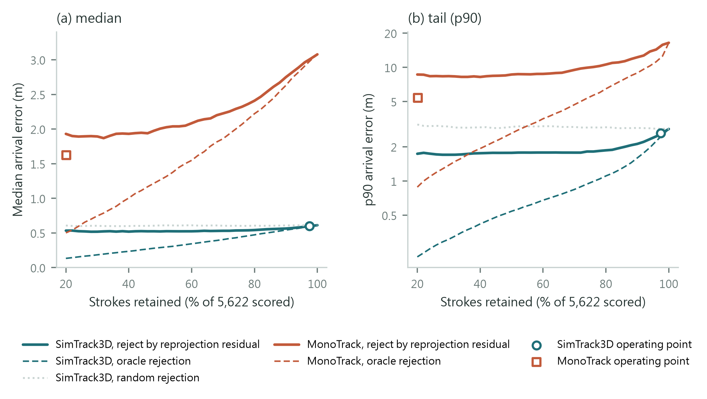
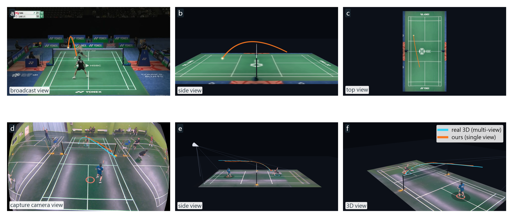
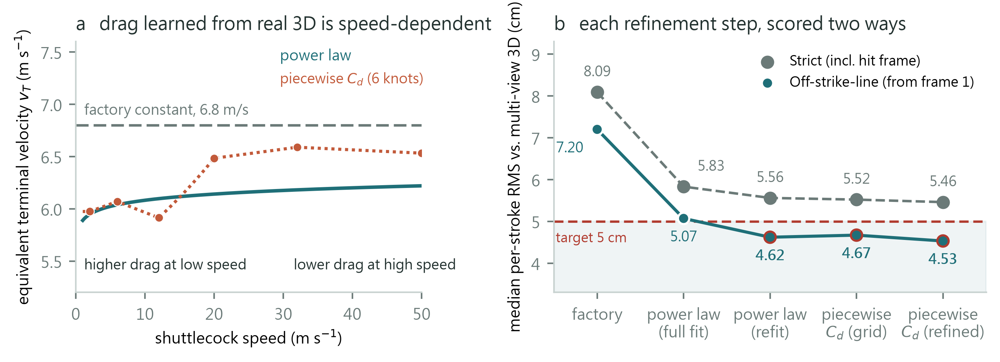
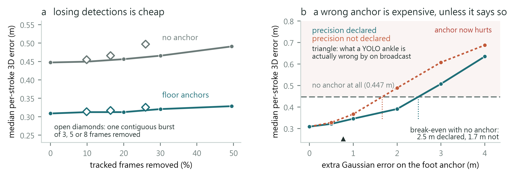
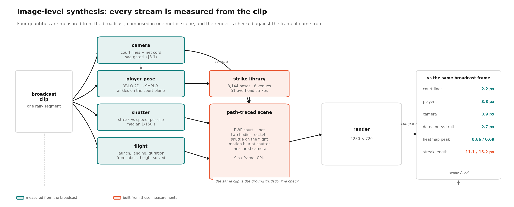
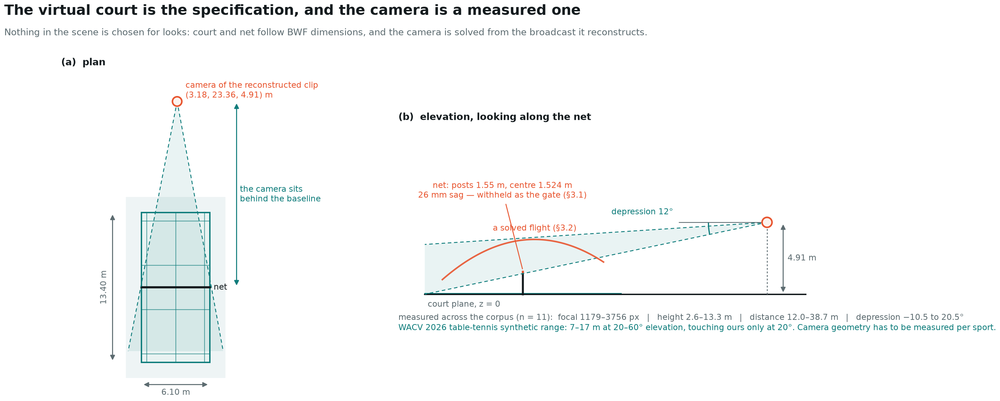
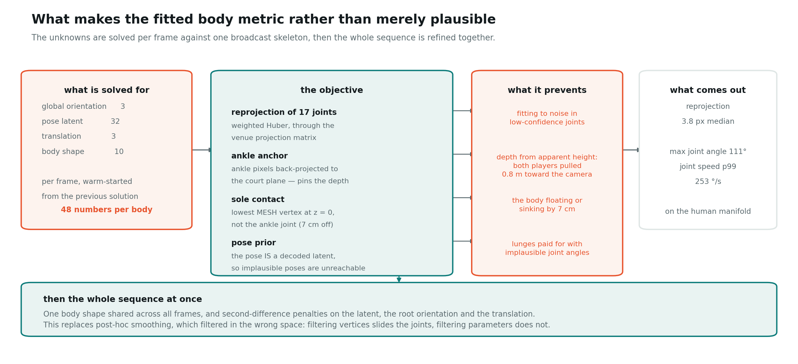
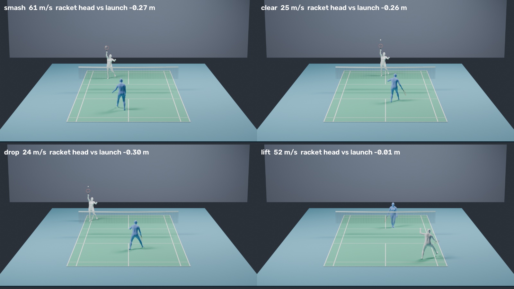
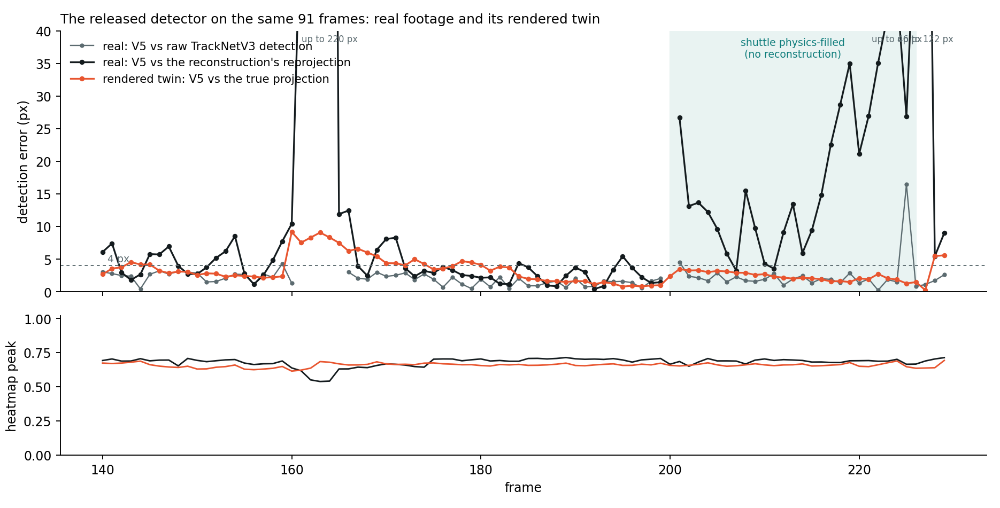
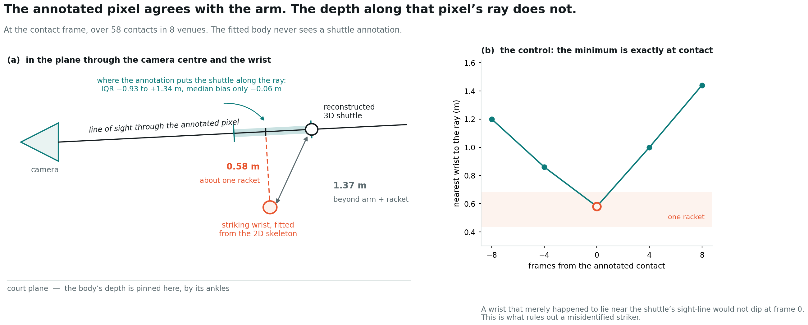

SimTrack3D: Monocular 3D Trajectory Reconstruction of Fast-Moving Sports Projectiles via Broadcast-Calibrated Sim-to-Real Transfer
Project page · 2026

Demo
Abstract
Reconstructing metric 3D trajectories of fast-moving sports projectiles from a single broadcast camera is a fundamentally ill-posed monocular vision problem. Monocular ballistic estimators in tennis and table tennis rely on ground-contact events (z = 0 bounces) to recover absolute metric depth. Badminton trajectories, in contrast, are bounce-free: they run racket to racket, often nearly along the optical axis. In this geometry, 2D reprojection residuals are structurally blind to line-of-sight depth errors: on high-speed smashes, candidate trajectories differing by a factor of 46 in 3D error (0.06 m vs. 2.78 m) produce reprojection residuals within a narrow 0.20 px band.
To resolve this depth degeneracy without multi-camera setups or 3D training data, we present SimTrack3D, a sim-to-real framework that grounds ballistic depth estimation in broadcast-observable planar geometry. We first resolve the focal-length degeneracy of planar court homographies with a non-coplanar net-cord calibration, verified by an invariant 26 mm catenary sag gate. At the core of the framework is Shuttle3D, a ray-depth transformer trained purely on 77,728 aerodynamically simulated boundary-value flights. It predicts depth along each camera viewing ray, conditioned on the players’ detected foot positions as spatiotemporal floor anchors with explicit uncertainty. Finally, a null-space rectifier enforces the physical court rules only along the weakest eigenvectors of the reprojection curvature matrix J⊤J, preserving 2D visual agreement at a median cost of 0.00 px.
On 6,553 real tournament strokes, SimTrack3D delivers physically plausible trajectories for 95.9% of strokes, against 20.2% for MonoTrack. On an independent ten-camera real-3D benchmark (2,682 held-out strokes), the Shuttle3D network attains a median 3D error of 0.42 m (0.46 m without anchors), against 0.49 m for an Uplifting-style baseline given the same anchors, and the foot anchors cut its gross failures (>1 m) from 23.8% to 16.1%. An image-computable observability formulation grounds these results: it predicts the Cramér–Rao bound of monocular ballistic estimation and shows where Shuttle3D’s accuracy comes from the image and where it comes from its learned prior.
1. Introduction
Decades of professional racket-sports archives exist almost exclusively as single-view broadcast video. Coaches, analysts and automated broadcast graphics need metric 3D ballistics — the maximum height of a clear, the steepness of a smash, the clearance over the net — but a monocular video records only 2D pixel projections. Multi-camera optical tracking systems capture these metric 3D kinematics, yet their installation cost restricts them to a handful of elite venues, leaving the historical archive inaccessible to metric evaluation. In this work, we propose a broadcast-only sim-to-real reconstruction framework that recovers metric 3D projectile trajectories to a median error of about 0.4 m, relying only on cues already present in broadcast video: the calibrated court markings, 2D shuttle detections and player poses.
Deep heatmap regressors typified by TrackNet[1, 2] have established reliable 2D projectile localization in high-speed sports broadcasts. Lifting these 2D detections into metric 3D trajectories from one camera, however, remains fundamentally ill-posed. Monocular 3D vision usually resolves scale and depth through object-centric metric priors, surface texture gradients or ground-contact dynamics. In broadcast badminton, every one of these cues collapses at once:
- Absence of optical scale priors. A tournament shuttlecock measures about 6.9 px across a 1280 × 720 frame, elongating to 17 px mostly through motion blur. It has no resolvable texture, orientation or metric extent.
- Degeneracy of motion parallax. Resolving depth along a viewing ray requires trajectory curvature induced by gravity and aerodynamic drag. Launch speeds reach a 99th percentile of 89.5 m/s, so a smash lasts roughly 15 tracked frames at 30 fps, nearly collinear with the camera’s optical axis, and its subtle curvature is buried beneath tracking noise (≈ 2 px).
- Absence of planar ground impacts. Unlike tennis or table tennis[3, 4], where bounces give explicit metric boundary conditions (z = 0), a shuttlecock flies strictly racket to racket and touches the floor only when the rally ends.
Badminton is therefore not a sport-specific curiosity but the limiting frontier of monocular ballistic estimation: a regime in which scale priors, contact events and motion parallax are all unavailable at once. An estimator that resolves metric depth under these conditions advances the broader question of how metric coordinates can be recovered when the image ceases to constrain depth.

The reprojection fallacy. Because sports broadcasts carry no dense 3D ground truth, prior work often validates reconstructions by 2D reprojection residuals or coarse plausibility heuristics, such as net clearance or landing within the court. As formalized in Figure 1, reprojection error is structurally uninformative on high-speed axial trajectories. On smashes, the trajectories obtained by scaling a real flight along its own viewing rays form an ambiguity cone: scaling moves the smash by 6.2 m at the racket and 4.0 m at arrival in 3D, while changing its image projection by less than 1.1×10−13 px, thirteen orders of magnitude below detector jitter (≈ 2 px). Candidate trajectories with a 46-fold difference in 3D error (0.06 m vs. 2.78 m) sit within an indistinguishable 0.20 px residual band. Minimizing reprojection error alone is blind to line-of-sight drift.
Core intuition: anchoring depth to the floor. A single viewpoint cannot resolve depth along an optical ray, but it localizes planar court markings with sub-pixel precision. Every badminton flight begins and ends near a player standing on this calibrated floor: the striker at launch (t = 0) and the receiver at arrival (t = T). Detecting the players’ feet with 2D pose estimation and mapping them onto the metric floor plane gives spatiotemporal floor anchors that inform depth along the first and last viewing rays. The elevated net cord, the only non-coplanar static fixture on the court, supplies the vertical scale that separates focal length from distance.
In this work, we present SimTrack3D, a sim-to-real monocular 3D trajectory reconstruction framework centered on Shuttle3D, a ray-depth transformer trained exclusively on aerodynamically simulated strokes. Our contributions are:
- A broadcast-only sim-to-real pipeline. A self-contained system that reconstructs metric 3D shuttle flights from single-camera video using only court lines, 2D detections and player poses, requires no 3D annotation for training, and can be applied retrospectively to archival footage.
- Sag-gated non-coplanar calibration. A calibration scheme that uses the elevated net cord to resolve the focal-length ambiguity of planar homographies, gated by an invariant 26 mm catenary sag check across 32 broadcast cameras.
- Ray-depth lifting with Shuttle3D. Aerodynamic boundary-value simulation over 13,010 real match strokes generates 77,728 physically feasible flights; Shuttle3D parameterizes depth along viewing rays, so every reconstructed position lies on its observed ray.
- Floor anchors and null-space rectification. Depth lifting is conditioned on detected player foot positions with declared uncertainty, and a rectifier projects the flight onto the physical court rules only along the weakest eigenvectors of J⊤J.
- Validation against real 3D. On 2,682 held-out strokes of an independent multi-camera capture, Shuttle3D reaches a median error of 0.42 m, ahead of physics-fit and learned baselines (Table 1).
- Ballistic observability. An image-computable observability number N predicts the Cramér–Rao lower bound (CRLB ∝ N−0.98) and explains, on synthetic strokes, why Shuttle3D relies on learned priors under severe visual ambiguity.
2. Related Work
2D projectile tracking in sports. Deep heatmap regressors typified by TrackNet[1, 2, 5] localize small, fast-moving objects across temporal frame stacks. Subsequent architectures integrate trajectory rectification and spatio-temporal attention, with parallel architectures adapted for soccer and table tennis. While motion blur is classically treated as corruption, BlurBall[6] demonstrates that blur streaks encode instantaneous velocity vectors. In this paper, we leverage existing 2D detectors as observational front-ends and focus entirely on the ill-posed monocular 3D lifting problem.
Monocular 3D trajectory reconstruction. Reconstructing 3D trajectories from single-view footage requires strong geometric or physical priors to resolve depth ambiguities. MonoTrack[7] optimizes a single ballistic launch state per stroke against 2D detections via non-linear least squares. As an unbiased fit it cannot beat the Cramér–Rao bound, and on smashes, where that bound is loose, our faithful reimplementation is about eight times less accurate than Shuttle3D (1.94 m vs. 0.24 m median on the smashes among 400 synthetic strokes). In table tennis, TT3D[3] and TT4D[4] exploit table impacts as metric boundary conditions, and Uplifting Table Tennis[8] trains a sequence model on synthetic arcs of the same bouncing ball; bounce events of this kind are absent during active badminton play. SynthNet[9] trains a lifting network on synthetic tennis trajectories and, unusually for this line of work, ties its synthetic cameras to measured real ones. Its badminton extension, TrajTrans[10], is the closest prior work to ours: a transformer trained only on synthetic shuttle flights, with cameras sampled around the 47 calibrated ShuttleSet22 cameras, that regresses six launch parameters from the pixel track and four court corners. It reports 0.48 m 3D error on synthetic strokes, but on real video it is evaluated only by 2D reprojection (median 23.6 px) and cross-camera consistency, with no real 3D. Three things separate our work from it: we show that 2D reprojection cannot discriminate 3D error on exactly these flights (Figure 1); four coplanar court corners carry no vertical scale, which we recover from the net cord under a sag gate; and we validate against a real multi-view 3D reference and against floor anchors. Where Is The Ball[11] lifts tennis and soccer tracks from a camera-invariant encoding of each viewing ray and predicts height along it, which makes it a precedent for our ray representation; our contribution does not rest on that representation but on measured cameras, event-anchored synthesis, floor anchors with declared precision, and validation against real 3D. It also assumes that the flight starts and ends on the ground, which a badminton stroke does not. On real footage these methods validate primarily through 2D reprojection or plausibility heuristics; we show that such proxies fail to penalize major depth degeneracies.
Sim-to-real transfer and system identification. Sim-to-real transfer paradigms span domain randomization[12], differentiable simulation, and domain adaptation. Rather than applying blind domain randomization over arbitrary camera distributions, our strategy follows rigorous system identification: we explicitly measure 32 broadcast camera geometries and synthesize trajectories from real match events.
Broadcast camera calibration. Planar field calibration from court markings provides an 8-DoF homography but leaves focal length entangled with extrinsic tilt and distance[13]. While vanishing-point estimators and deep registration networks (e.g., TVCalib[14], PnLCalib[15]) calibrate sports fields, courts lacking perpendicular vertical elements remain mathematically degenerate. We resolve this by incorporating the elevated net cord and its catenary deflection profile into the objective.
A longer survey, with the sim-to-real mechanisms and the constrained-estimation literature treated separately, is on the supplementary page.
3. Methodology
Pipeline. Figure 2 shows the system in two lanes. In training, the endpoints and flight times of 13,010 real tournament strokes define aerodynamic boundary-value problems whose 77,728 simulated flights are projected through 32 measured broadcast cameras (§3.2); Shuttle3D, the only learned component, is trained on these alone (§3.3). At inference, a single broadcast gives a 2D shuttle track and the players’ poses. The court lines and the elevated net cord calibrate the camera, and the cord’s withheld sag accepts or rejects the calibration (§3.1). Each detection becomes a viewing ray, and the detected feet of the hitter and receiver become floor anchors (§3.5). Shuttle3D predicts depth along each ray, and a null-space rectifier projects the fitted flight onto the court rules along the directions the image cannot see (§3.4). The output is a metric flight in the court frame, or a flagged stroke.
3.1 Sag-gated non-coplanar calibration
Let X = [X, Y, Z]⊤ denote a 3D coordinate in the canonical court frame, where the court floor lies on Z = 0. Coplanar court line markings provide an 8-DoF homography
which mathematically entangles camera focal length f and camera distance d, yielding up to 65% focal-length ambiguity under Zhang's planar constraints[13] on our broadcast corpus.

To resolve this degeneracy, we incorporate the elevated badminton net cord as a metric non-coplanar reference. Under Badminton World Federation (BWF) specifications, the cord is suspended at post height Hp = 1.55 m and sags under gravity to Hc = 1.524 m at court center across width L = 6.10 m. In net-aligned coordinates, the cord profile follows a catenary:
Because Δz / L ≪ 1, the shallow parabolic expansion holds:
Joint optimization. We extract sub-pixel court line segments and net-cord samples (e.g., 270 samples with 0.14 px fit residual on representative venues) via ridge filtering over temporal median backgrounds, and formulate venue calibration as a joint non-linear optimization over focal length f, rotation R, and translation t:
where d⊥ denotes the orthogonal point-to-line residual on the court plane, and π(·) denotes the perspective projection of 3D net-cord samples Qj. The focal length is fixed by the cord's height above the court; its sag plays no part in the fit.
Physical validation gate. The physical sag Δz is withheld from optimization. Converged calibrations are accepted if and only if the estimated vertical deflection satisfies:
This physical gate strictly rejects degenerate planar minima where 2D line residuals appear optimal (<0.3 px) while camera extrinsics diverge by meters. Across 32 broadcast venues, 29 are solved fully automatically, at a median runtime of 11.7 s per venue, and within-rally camera drift, measured by masked affine ECC alignment, has a median of 0.034 px and a maximum of 0.40 px over 27 rallies from 9 venues, validating the stationary-camera assumption (Supp. §S16). Of the 26 venues that come with no court annotation, 19 pass fully automatically (zero false passes, median corner error 0.033 m) and 22 pass with lightweight 4-corner initialization, exhibiting a median sag of 23.1 mm.
3.2 Aerodynamic boundary-value synthesis
A tournament shuttlecock experiences strong quadratic aerodynamic drag. With kinematic state s(t) = [x(t)⊤, v(t)⊤]⊤, the equations of motion are:
where g = [0, 0, −9.81]⊤ m/s2 and γ = ‖g‖ / vT2. With terminal velocity vT = 6.8 m/s, the aerodynamic drag parameter is γ ≈ 0.212 m−1.
Rather than sampling unconstrained launch states, trajectory synthesis is anchored to real tournament dynamics via two-point boundary-value problems (BVPs) over 13,010 strokes from ShuttleSet. Given annotated endpoints
and flight duration T, we solve for the initial velocity v0 via a shooting method using a 4th-order Runge–Kutta (RK4) integrator and damped Newton steps. The annotations fix the ground positions (X, Y) and T; the launch and arrival heights Z0, ZT are drawn from stroke-specific priors. The update is
where Φ(v0) = x̂(T; v0) − xT and JΦ = ∂Φ / ∂v0 ∈ ℝ3×3. The shooting solver converges on 99.9% of problems.
Physical audit and feasibility filtering. Heights drawn without regard to the net let up to 10.6% of BVP solutions pass under the cord (19.9% of net shots). We therefore solve an ensemble of eight height candidates per stroke and verify each solution against physical criteria — net clearance, floor non-penetration, and the venue ceiling:
keeping one admissible candidate per stroke. This yields 77,728 valid trajectory sequences, every one of which clears the cord by at least 2 cm.
3.3 Shuttle3D: ray-depth transformer
To ensure camera-agnostic generalization, Shuttle3D operates in canonical viewing space. Given a 2D detection pt = [ut, vt]⊤, the unit viewing ray in world coordinates is:
where P is the calibrated camera matrix. Its intersection with the floor plane Z = 0 is:
where C is the optical center. Each frame is tokenized as a 7D feature vector [rt⊤, Xfloor, Yfloor, 1horiz, t]⊤, where 1horiz flags near-horizontal rays whose floor intersections diverge, appended with a global token carrying the camera center and the planar anchors of §3.5. A 6-layer Transformer encoder (dmodel = 192, 8 attention heads) estimates relative depth dt along each ray:
where c0 is the court center. Estimating ray depth rather than absolute 3D position prevents numerical divergence at low elevations, where rt,z → 0.
Domain-matched noise injection. Each training batch re-projects the synthetic flights through their cameras and corrupts the tracks with a noise model measured on real footage. Each stroke's noise level σ is drawn from the distribution of real unconstrained reprojection residuals (median 6.4 px, 90th percentile 24.6 px, clipped to 0.8–12 px); 3% of detections are replaced by outliers of 8–40 px; 5% of frames are dropped at random; with probability 0.5 a contiguous gap of 2–8 frames is removed; with probability 0.5 the first 1–5 frames are lost to late acquisition, and with probability 0.3 the last 1–10 to a sudden end; and the whole track is shifted by up to ±1.5 px and scaled by up to 0.2% to mimic calibration error. Differentiable hinge losses penalize violations of court boundaries and floor intersections during backpropagation.
3.4 Null-space constrained rectification
Raw per-frame transformer predictions lack temporal physical coupling, so raw trajectories exhibit high-frequency jitter and occasional physical violations. We therefore introduce a second-tier physics Rectifier. Given initial 3D predictions P̂t, we fit an aerodynamic launch state s0 = [x0⊤, v0⊤]⊤ via non-linear least squares:
subject to hard court inequality constraints:
the last imposed on every stroke except the last of a rally, since a player cannot strike across the net.

Projection along weak observability directions. If the unconstrained fit violates physical bounds, optimization steps are restricted strictly to the 2D subspace spanned by the two eigenvectors [v5, v6] corresponding to the smallest eigenvalues of the Gauss–Newton reprojection curvature matrix J⊤J:
As illustrated in Figure 3 on one broadcast stroke, this subspace represents line-of-sight depth degeneracy where metric adjustments incur negligible reprojection penalties: the unconstrained fit crosses the net plane at 0.96 m, beneath the cord, and the projected flight crosses at 1.54 m, while its reprojection error rises only from 7.21 to 7.37 px, because the correction slides the flight along the viewing rays. Across strokes, the cost is similarly small (observed on 6,553 real strokes: median cost 0.00 px, 90th percentile 0.76 px). Strokes that cannot achieve physical feasibility within a residual budget (Δbudget = 14.0 px) are explicitly flagged as unfixable outliers rather than hallucinated. The projection buys feasibility, not accuracy; §5.4 measures its cost against real 3D. Every rectifier number reported in this paper uses one configuration: four restarts of the constrained solver from distinct initialisations, followed by a feasibility bisection, with the returned flight re-integrated in double precision and re-checked against every rule before it is emitted.
Why a rectifier that does not improve accuracy. Metric accuracy and physical validity are different requirements. For sports analytics and broadcast graphics, a flight that passes under the net, through the floor or out of the hall is a catastrophic semantic failure: it corrupts rally statistics and net-clearance measurements and breaks any rendered replay, however small its metric error. The rectifier is a safety valve against such failures, not an accuracy component. It moves an estimate only along the directions the image cannot see, at a median reprojection cost of 0 px, and it flags what it cannot repair. Against real 3D it costs 1–3 cm with a tight prior and 9–16 cm with the looser deployed prior (§5.4, Table 3); in exchange, no emitted flight violates a court rule. Accuracy is therefore reported for the Tier-1 network, and feasibility for the full pipeline.
3.5 Spatiotemporal planar anchors
To constrain the unobservable depth axis, we extract spatiotemporal boundary conditions directly from broadcast video:
- Hitter's ankle midpoint (t = 0). Extracted by 2D pose estimation and projected via H onto the floor; it locates the launch horizontally.
- Hitter's wrist elevation (t = 0). The viewing ray of the hitting wrist is intersected with the vertical plane through the hitter's feet; it bounds launch height.
- Receiver's ankle midpoint (t = T). Ground position of the defending player at arrival; it locates the arrival horizontally.
- Stationary landing spot (z = 0). On rally-final strokes, temporal clustering over stationary frames defines a terminal floor anchor.
Precision-aware channels. Each anchor is paired with its declared uncertainty σ, fed as an explicit input channel, enabling the network to balance visual evidence against anchor confidence. The global token is 18-dimensional: the camera center (3), the three planar anchors as (x, y, presence) (9), the launch height and its presence bit (2), and the four declared σ values (4). During training σ is sampled per stroke over 0.10–1.50 m horizontally and 0.05–0.40 m in height, and the injected anchor error is scaled to the declared value, so the declaration is honest and the network learns to use it. An absent anchor is marked absent, so one model serves any subset of anchors.
Soft tokens, not hard constraints. In the main setting, anchors enter Shuttle3D only as soft conditioning tokens in Tier 1, and Tier 2 enforces only the court rules of §3.4. The anchor radii — a 2.5 m disc about each ankle anchor, a 1.0 m bound on launch height, and 0.5 m about a landing spot — are used only in the anchor-constrained variants of the leave-one-anchor-out evaluation (Supp. §S4, settings all and −X), where the anchors additionally become hard constraints in Tier 2. The separation is measured rather than assumed. On 6,553 tournament strokes with anchors from a real pose detector, feeding the foot anchors to Shuttle3D as tokens leaves the rectifier’s feasibility where it is without anchors (95.9% vs. 96.0%), whereas also imposing every anchor as a hard constraint drops it to 79.8%: a detector that is wrong by a metre, as it is on a jumping player, cannot be enforced, only weighed. In the main results, foot anchors means the hitter’s and receiver’s ground positions; the wrist-height and landing anchors enter only the leave-one-anchor-out analysis of Supp. §S4.
When the pose detector fails. Occluded players, players leaving the frame and jump smashes are handled by the same mechanism. An undetected player enters as an absent anchor with its presence bit at zero, a case the network is trained on: 30% of training strokes carry no anchor at all, and otherwise each anchor is present with probability 0.6. An uncertain detection enters with a larger declared σ, so it is weighed rather than trusted. On a jump smash the ankles leave the floor and the anchor degrades (1.05 vs. 0.76 m from the annotated player position on broadcast), and the network discounts it through its declared uncertainty. Because anchors are soft tokens, a bad anchor cannot make the pipeline fail: feasibility stays at 95.9% with anchors as tokens, against 79.8% if they were imposed as hard constraints.
4. Observability and Estimation Bounds
4.1 Möbius projection of ballistic motion
Consider an unaccelerated trajectory in 3D camera coordinates: Xc(t) = X0 + Vt. Under pinhole perspective projection, its image trajectory follows:
Any constant-velocity 3D path projects strictly as a 1D Möbius transformation of time parameterized by five degrees of freedom. Any visual deviation from this Möbius curve constitutes the sole empirical signature of physical acceleration.
4.2 The observability number N
We define the dimensionless observability number N as the root-mean-square residual of the observed 2D track from the best-fit unaccelerated Möbius trajectory, normalized by visual detector noise σ2D:
N quantifies the signal-to-noise ratio of physical trajectory curvature directly from image space, without 3D ground truth. Where that signal is weak, the image stops determining depth and a learned estimate has to lean on its prior. We locate the transition empirically rather than by fiat: on 602 held-out synthetic strokes binned by N, the ratio of model error to the CRLB stays below 1 (prior-dominated) up to N ≈ 17 and reaches 1.2 (image-dominated) by N ≈ 21 (§4.4).

4.3 Fisher information and the Cramér–Rao bound
Under Gaussian observation noise, the Fisher Information Matrix over the ballistic launch state s0 is:
For any unbiased estimator, the covariance of reconstructed 3D positions is bounded by the Cramér–Rao Lower Bound (CRLB):
Dual degeneracy mechanisms. Singular value decomposition of I(s0) over 3,993 strokes shows that the right singular vector of the smallest singular value σmin aligns with the camera ray to the launch point within a median angle of 1.9° (<10° on 89.0% of strokes). Viewing-ray alignment angle and log N are uncorrelated (r = −0.00), while the angle explains only part of the conditioning (r = +0.35 with log σmin). Monocular ballistic lifting therefore suffers from two independent degeneracies: (i) optical collinearity with the viewing ray, and (ii) short temporal observation arcs. N registers both.
4.4 Prior reliance below the unbiased bound
Across 7,994 synthetic strokes, N predicts the theoretical CRLB through an empirical power law (Figure 4):
and the partial correlation controlling for frame count remains −0.59. On the four highest-N stroke types (lift, clear, cross-net and defensive lift, N ≥ 14.9), Shuttle3D stays above the CRLB (ratio 1.48–2.70) and pays the full variance an unbiased estimator would. On 9 of 15 stroke types it falls below the bound, by up to 4.6× on drives (N = 2.3); the five lowest-N types (tap smash, rear drive, smash, rush and drive, N ≤ 4.2) sit at ratios of 0.22–0.61 (per-type values in Supp. Table S1). This does not violate the bound, which constrains unbiased estimators only: a network trained on a stroke distribution is a biased estimator, and where the image is uninformative it regresses toward typical tactical shot profiles, trading variance for bias. Binning 602 held-out strokes by N locates the transition: the ratio of bin-median error to bin-median CRLB crosses 1 at N ≈ 17 and 1.2 at N ≈ 21.
N is a design-time diagnostic. It predicts the Cramér–Rao bound from the image alone (R² = 0.83) and marks, before any model is trained, where a monocular estimate must lean on its prior (N ≲ 17) and where the image itself carries the depth (N ≳ 21). That is what a system designer needs: which stroke types need floor anchors, and which camera placements raise observability. It is not a per-stroke quality flag at deployment time. On 6,928 real broadcast strokes its rank correlation with endpoint error is ρ = +0.13, the opposite sign to the one theory predicts, so we do not use it that way.
5. Experiments and Results
5.1 Experimental setup
Datasets. We evaluate on three corpora. (i) ShuttleSet supplies 6,553 tournament strokes across 10 venues, with annotated player ground positions and TrackNetV3 detections. (ii) The TrackNetV3 broadcast corpus supplies 2,592 interior strokes from 22 international broadcast venues with frame-level 2D ground truth, calibrated purely from broadcast video by the pipeline of §3.1. (iii) The multi-view reference is an independent ten-camera indoor capture (48 sessions, 2,083 rallies) whose 3D trajectories are reconstructed by a learned multi-view method. We treat it as a reference, not as metric ground truth: it is temporally smoothed (a 1–2 cm floor), it was recorded in a training hall rather than a tournament arena, and it is used only to test the monocular system: no quantity measured on it trains or configures the final model, and in that test every model input is restricted to what one broadcast camera provides, with player anchors generated at the error level of a broadcast pose detector (§5.4). Its flights are projected through our 32 measured broadcast cameras with a clean observation model (σ = 2 px, 5% dropout; lighter than the tracker-level noise the network is trained with), and 2,682 strokes from 7 sessions are held out from every fit.
Evaluation metrics. (i) Physical feasibility rate: the fraction of reconstructions satisfying the court rules — floor non-penetration, net clearance, the hall bounds, and crossing the net on every stroke but the last of a rally. (ii) Arrival / launch consistency: horizontal distance from the reconstructed endpoints to the annotated player positions. This is a consistency check, not an accuracy measure. The annotation is a clicked ground position near a player, not the shuttle, so even a perfect reconstruction does not score zero, and a reconstruction biased toward where players stand scores better than the truth. On the multi-view reference we can measure both effects. The true flights sit a median 1.11 m (launch) and 1.37 m (arrival) from the nearest player; moving only the scored endpoints of the true flights halfway toward that player lowers the score to 0.56 / 0.68 m, although those endpoints are now 0.56 / 0.68 m wrong (Supp. §S2.3). (iii) Metric 3D error: median over strokes of the per-stroke median 3D error against the multi-view reference. All accuracy claims in this paper rest on (iii). Naming. SimTrack3D is the full pipeline: calibration, the Shuttle3D network, foot anchors and the Tier-2 rectifier. Shuttle3D is the network alone; the final model is the Shuttle3D network used in every main-text result unless a row says otherwise, trained only on simulation. Accuracy against real 3D is reported for the network, because the rectifier buys feasibility rather than accuracy (§5.4).
5.2 Baseline comparisons and fair evaluation
Table 1 compares SimTrack3D with prior monocular 3D approaches against real 3D, on one common set of 400 held-out multi-view strokes. MonoTrack fits a launch state and drag per stroke; the Uplifting-style and TrajTrans-style lifters are re-implementations trained on our simulated data, cameras and noise model, changing only representation and output. SimTrack3D is the most accurate with and without foot anchors, and it has the fewest strokes more than 1 m wrong. The rest of this section scores the same methods on broadcast footage, where no 3D truth exists.
| Table 1 — Comparison with monocular 3D methods against real 3D. The same 400 held-out strokes of the multi-view reference for every method; median over strokes of the per-stroke median 3D error (m) and share of strokes more than 1 m wrong. Mean [range] over three training seeds where stated. Foot anchors are simulated at detector-level error (§5.4). | |||||
|---|---|---|---|---|---|
| Method | Trained on | No anchors | + foot anchors | >1 m, no anchors | >1 m, anchors |
| MonoTrack[7] | — (physics fit) | 2.79 | — | 90.8% | — |
| Physics fit, no prior | — | 1.80 | — | 78.5% | — |
| TrajTrans-style, court corners | simulation | 0.582 | — | 32.8% | — |
| TrajTrans-style, corners + net posts | simulation | 0.587 | — | 33.2% | — |
| Uplifting-style, random cameras | simulation | 0.779 | — | 39.8% | — |
| Uplifting-style, measured cameras | simulation | 0.585 [0.563–0.604] | 0.497 | 30.9% | 22.5% |
| SimTrack3D (ours) | simulation | 0.458 [0.452–0.464] | 0.433 [0.419–0.452] | 24.3% | 17.5% |
We benchmark against MonoTrack[7] (a per-shot seven-parameter fit of launch state and drag under an unconstrained reprojection loss), an iterated EKF with RTS smoothing, and batch MAP. All baselines consume identical 2D tracks, identical camera calibrations and the identical RK4 quadratic-drag integrator that generates our training data, so only the estimator differs (Supp. §S2). Learned sim-to-real lifters in the style of Uplifting Table Tennis and TrajTrans are compared against the multi-view reference in §5.4, where their accuracy can be measured. Table 2 scores against annotated player positions, so it separates methods whose endpoints are metres apart but cannot rank methods within the annotation's own offset from the shuttle (§5.1).
| Table 2 — Every stroke scored. Arrival consistency (m) against the annotated receiver position on the 5,622 strokes all methods attempt. Certified: strokes SimTrack3D marks feasible; own output: every stroke keeps its reconstruction; penalty: flagged strokes are charged 7.35 m. SimTrack3D rows use no foot anchors, which are detected near the scored annotations; the EKF rows are their own 958-stroke subset. | |||||
|---|---|---|---|---|---|
| Method | Protocol | n | Median (m) | p90 (m) | Feasible |
| MonoTrack | certified subset | 5,480 | 3.02 | 15.22 | 20.5% |
| MonoTrack | all, own output | 5,622 | 3.08 | 16.44 | 20.2% |
| MonoTrack | all, 7.35 m penalty | 5,622 | 7.35 | 7.35 | 20.2% |
| EKF + RTS smoother | own run ∩ certified | 958 | 3.09 | 14.10 | 13.8% |
| Iterated EKF | own run ∩ certified | 958 | 2.64 | 14.19 | 25.1% |
| Batch MAP | own run ∩ certified | 958 | 2.55 | 12.66 | 25.4% |
| SimTrack3D | certified subset | 5,480 | 0.60 | 2.63 | 100% |
| SimTrack3D | all, own output | 5,622 | 0.61 | 2.87 | 97.5% |
| SimTrack3D | all, 7.35 m penalty | 5,622 | 0.62 | 3.15 | 97.5% |
As Table 2 shows, unconstrained optimization fails on real tournament footage: MonoTrack returns a physically possible flight on 20.2% of the common set (18.3% of its full 6,914-stroke run) with a median arrival error of 3.08 m. The classical estimators are not straw men. On 400 synthetic strokes batch MAP reaches 0.317 m and is more accurate than Shuttle3D on the two highest-N stroke types (lift 0.136 vs. 0.279 m, clear 0.139 vs. 0.309 m), as an efficient unbiased estimator should be when the image is informative; on smashes, where N collapses, it degrades to 1.264 m against 0.229 m for Shuttle3D (synthetic).
Every stroke is scored. To rule out sample-selection bias, Table 2 rescores every method on the 5,622 strokes of the common intersection that carry an arrival annotation under three protocols. Our feasibility flag marks a stroke rather than deleting it, so a full-sample number exists: keeping the flagged strokes' own output moves our median from 0.60 m (certified subset) to 0.61 m, and charging every flagged stroke a harsh 7.35 m moves it to 0.62 m. The gate (96.0% of all 6,553 strokes, 97.5% of this set) is worth 1–2 cm, not the gap to the baselines. The same penalty applied to MonoTrack's physically impossible strokes, 79.8% of the set, puts its median at the penalty value itself. Figure 5 grants every method the same right to abandon, with oracle rejection (by true error, unavailable at inference) and random rejection as bounds: rejecting strokes by each method's own unconstrained physics-fit residual, MonoTrack falls from 3.08 m at full coverage to 2.01 m at 50% and 1.62 m at 20% (its own possibility flag), and at no coverage down to 20% does it reach the 0.61 m SimTrack3D attains at 100%. The EKF-family rows come from their own 1,200-stroke run and are not row-comparable. The full protocol analysis, the leave-one-anchor-out evaluation on 6,553 strokes and the net-cord clearance diagnostic are in Supp. §S4–S6.

5.3 Representation ablation
We compare four alternative input parameterizations with ours under identical Transformer backbones and training schedules, on held-out strokes viewed through seen and unseen broadcast cameras (Supp. Table S3; medians over strokes of the per-stroke mean 3D error). Models regressing 3D coordinates from pixel inputs are more accurate than ours on seen cameras (0.329–0.341 vs. 0.388 m) because they memorize venue-specific depth distributions, but they degrade by 1.7× to 4.3× on unseen cameras (0.579–1.408 m). Our ray-depth formulation shows no measurable degradation on unseen cameras (0.388 m seen, 0.387 m unseen) and places every estimate on its own viewing ray by construction (0.000 m off-ray on unseen cameras, against 0.059–0.934 m for the alternatives).
5.4 Validation against the multi-view reference
We audit SimTrack3D against real 3D trajectories from the multi-view reference, aligned to our canonical court frame through court white lines alone. The recovered scale is 1.000, and the net cord, never presented to the fit, reprojects at a median of 2.94 px across the rig (0.0–1.5 px on the eight narrow-angle side cameras).
| Table 3 — Synthetic versus real 3D error. One script, the same cameras and the final model (seed 0, no anchors) on 400 held-out synthetic strokes and the 400 held-out real strokes of Table 1. Poss.: share of reconstructions satisfying every court rule (reference flights: 96.0% synthetic, 94.0% real). The last column splits the real error along and across the line of sight. | ||||||
|---|---|---|---|---|---|---|
| Method (400 strokes) | Synth. (m) | Real 3D (m) | Ratio | Poss. synth | Poss. real | Along / across ray (m) |
| Ball-on-floor | 12.540 | 11.976 | 1.0× | 0% | 0% | — |
| Constant depth | 2.073 | 1.647 | 0.8× | 64.8% | 63.2% | — |
| MonoTrack[7] | 1.001 | 2.793 | 2.8× | 59.0% | 30.5% | — |
| Physics fit only (no prior) | 0.596 | 1.802 | 3.0× | 100% | 100% | — |
| Shuttle3D (Tier 1) | 0.329 | 0.452 | 1.4× | 95.8% | 90.0% | 0.450 / 0.024 |
| Shuttle3D + physics prior | 0.268 | 0.638 | 2.4× | 100% | 100% | — |
| Full estimator (Tier 1+2) | 0.267 | 0.642 | 2.4× | 99.2% | 92.2% | — |
| Table 4 — Monocular reconstruction against real 3D (2,682 held-out strokes from 7 sessions; median error in m). Foot anchors are simulated at detector-level error (§5.4). The last row is a supervised upper bound, not part of the system. | ||||||
|---|---|---|---|---|---|---|
| Model (2,682 strokes) | No anchors (m) | + foot anchors, detector-level (m) | >1 m, none | >1 m, feet | >2 m, none → feet | Depth reversals, none → feet |
| Shuttle3D, final model, three seeds (mean [range]) | 0.463 [0.459–0.466] | 0.424 [0.417–0.432] | 23.8% | 16.1% | 10.0% → 4.1% | 10.4% → 2.6% |
| Uplifting-style lifter + the same anchors (seed 0) | 0.588 | 0.493 | 31.3% | 22.1% | 14.0% → 8.1% | 10.0% → 3.5% |
| Uplifting-style lifter, three seeds (mean [range]) | 0.594 [0.581–0.608] | — | — | — | — | — |
| Upper bound: fine-tuned on real 3D (not part of the system) | 0.320 | — | 13.9% | — | — | — |

Test protocol. The 2D track is the reference flight seen through one of our measured broadcast cameras. The reference has video for only one rally, so a pose detector cannot be run on it; foot anchors are therefore simulated at detector quality: the reference player’s ground position plus a residual drawn from 7,763 measured residuals of the broadcast pose pipeline on ShuttleSet (median 0.76 m, wrong-player picks included), with 5.2% of anchors dropped as undetected. The hitter and receiver are the players nearest the reference shuttle at the first and last tracked frames, standing in for the stroke-order assignment a broadcast pipeline makes. Apart from these corrupted player positions, no reference quantity enters any model. The Uplifting-style lifter receives the same anchor values without the declared-uncertainty channel, which it does not have. Without anchors, single-seed differences lie inside a 0.040 m spread, so those rows report three seeds.
The synthetic-to-real gap. On 400 synthetic and 400 real held-out strokes run through one script (Table 3), synthetic evaluation understates real 3D error for every non-trivial method: by 1.4× for Shuttle3D, 2.8× for MonoTrack and 3.0× for the physics fit. The ranking changes with it: the physics-prior and full estimators, the best synthetic cells (0.268 and 0.267 m), lose to Shuttle3D alone on real flights (0.638 and 0.642 vs. 0.452 m). Physical plausibility does not guarantee metric accuracy: the physics-prior fit satisfies every court rule on 100% of real flights yet is 0.638 m from the reference at the median. Shuttle3D’s 0.452 m is close to the median CRLB of 0.46 m computed over 3,000 reference strokes.
Error decomposition. The residual is 19× larger along the viewing ray than across it (0.450 vs. 0.024 m), and every method shows the same signature: given the 2D track, calibration is not the bottleneck, depth is, as §4 predicts. (The 2D tracks in this test are the reference flights projected with 2 px noise; §5.5 tests frame loss, but real tracker noise is not tested on the reference.) On the 2,682 held-out strokes (Table 4), foot anchors at detector quality move the final model from 0.463 to 0.424 m (three seeds). The larger effect is on failures: strokes more than 1 m wrong fall from 23.8% to 16.1%, strokes more than 2 m wrong from 10.0% to 4.1%, and depth reversals — a flight reconstructed as approaching the camera while it recedes — from 10.4% to 2.6%. The anchors correct the level of the depth, which is the direction the image cannot see. How much they can correct is set by the detector: §5.5 injects additional anchor error and finds the point at which an anchor stops helping. Enforcing the court rules through Tier 2 does not improve accuracy against the reference: with the prior used in deployment it costs 9–16 cm (Table 3; Supp. §S8.5), and 1–3 cm with a tight prior. The rectifier buys feasibility, not accuracy, which is why the accuracy figures in this section are those of the Tier-1 network.
Learned sim-to-real baselines. We re-implemented two learned lifters on our training data, cameras and noise model, changing only representation and output: an Uplifting-style lifter (pixels, court and net-post keypoints, per-frame 3D output) and a TrajTrans-style lifter (pixels and court corners regressed to launch parameters). Against the reference, the Uplifting-style lifter is 0.594 m from the real flight over three seeds, against 0.463 m for Shuttle3D (three seeds each); given the same detector-grade foot anchors it reaches 0.493 m against 0.424 m for the final Shuttle3D, with gross failures of 22.1% against 16.1% (Table 4). The TrajTrans-style variants reach 0.574–0.582 m. Allowing the network to leave its viewing ray — the unconstrained 3D output these lifters use — improves agreement with 2D projections and with ShuttleSet’s player-position annotations, but costs metric accuracy against the real 3D reference (Supp. §S2.3).
Checking the simulator. The reference also allows the simulator’s drag law to be refitted to real flight (terminal velocity 6.04 m/s instead of 6.8). Retraining on the refitted law does not change the monocular error, which is bounded by depth observability rather than aerodynamic fidelity, and the final system keeps the canonical law (Supp. §S8.2).
5.5 Stress testing: airborne smashes and frame drops
Airborne jump smashes. The floor anchors come from the players’ feet, but a smash is struck in mid-air. On the 2,682 held-out reference strokes we measure lift as the hitter’s pelvis height at contact minus that player’s standing baseline in the rally. Jumping does not move the player away from the shuttle in the horizontal plane: the player-to-shuttle distance at contact is 1.21 m for grounded strokes and 0.78 m for airborne ones (lift > 0.15 m), and it falls monotonically across lift quartiles from 1.37 to 0.78 m (correlation −0.48), because a player jumping to smash gets underneath the shuttle. With detector-grade anchors the final model improves on both groups: airborne strokes go from 0.516 to 0.487 m and grounded ones from 0.448 to 0.395 m (Table 5, top). Airborne strokes carry more error with or without anchors, so the difference comes from the stroke types — short, low-N arcs — rather than from the anchor. On 6,553 broadcast strokes the real pose detector does degrade on smash, tap smash and net kill (1.05 vs. 0.76 m from the annotated player position), because a jumping player’s ankles leave the floor; the anchor enters Tier 1 as a soft token with a declared uncertainty, not as a constraint, so a worse anchor is trusted less rather than enforced (Supp. §S9).
| Table 5 — Airborne strokes and input degradation on real 3D (2,682 held-out strokes; median error in m, share >1 m in brackets). Anchors are simulated at detector-level error. | |||||
|---|---|---|---|---|---|
| Group | n | Player dist. | Lift | No anchors | Foot anchors |
| Airborne (lift > 0.15 m) | 754 | 0.78 m | 0.22 m | 0.516 (28.5%) | 0.487 (19.8%) |
| Grounded | 1,928 | 1.21 m | −0.01 m | 0.448 (22.8%) | 0.395 (14.8%) |
| Smash-class (z0 > 2.4 m, v > 30 m/s) | 332 | 0.74 m | 0.22 m | 0.470 (22.9%) | 0.427 (18.1%) |
| Degradation | Level | Foot anchors | No anchors | ||
| None (clean) | 0% | 0.417 (16.2%) | 0.466 (24.4%) | ||
| Random frame loss | 30% | 0.432 (16.9%) | 0.485 (25.9%) | ||
| Random frame loss | 50% | 0.451 (18.1%) | 0.517 (28.2%) | ||
| Contiguous burst | 5 frames | 0.428 (16.8%) | 0.487 (26.6%) | ||
| Contiguous burst | 8 frames | 0.442 (17.8%) | 0.523 (28.8%) | ||
| Anchor noise, declared | σ + 1 m | 0.421 (16.6%) | — | ||
| Anchor noise, declared | σ + 2 m | 0.467 (23.1%) | — | ||
| Anchor noise, declared | σ + 3 m | 0.569 (32.0%) | — | ||
| Anchor noise, silent | σ + 1 m | 0.463 (20.0%) | — | ||
| Anchor noise, silent | σ + 2 m | 0.563 (27.9%) | — | ||
Input degradation. Table 5 (bottom) degrades the inputs of the final model at inference. Randomly discarding 50% of the tracked frames raises the anchored error from 0.417 to 0.451 m and gross errors from 16.2% to 18.1%. With anchors, a contiguous 8-frame burst — the tracking collapse a blurred smash produces — costs 2.5 cm (0.442 m), close to random loss at the same retained frame count (0.432 m); without anchors the same burst costs more than the equivalent random loss (0.523 vs. 0.485 m), because nothing else fixes the depth level. Extra anchor error is more expensive. The anchors in this table already carry a broadcast detector’s error; on top of that, they still help when a further 1 m of error is declared through the precision channel (0.421 m), and they break even with using no anchor at all at about 2 m when it is declared and 1 m when it is not (Supp. Figure S3). Declaring the anchor’s uncertainty is what lets a noisy detector be used safely.
5.6 Computational runtime
Benchmarked on a single NVIDIA RTX 3090, 2D ball detection runs at 224 fps (TrackNetV4, stride 8, 4.46 ms/frame) and player pose estimation at 50 fps (19.81 ms/frame). Shuttle3D lifts 6,100 strokes/s in batch mode (0.16 ms/stroke). Venue calibration costs 11.7 s once per venue. In batch deployment the Tier-2 rectifier processes 32 strokes/s (31.3 ms/stroke), which gives an end-to-end throughput of 5.8× real time for broadcast matches in the rules-only configuration; adding pose anchors lowers it to 1.3× real time. The rectifier is throughput-bound rather than latency-bound: its cost is a fixed sequence of integration and optimization steps whose wall time barely changes with batch size, so repairing a single rally in isolation takes roughly 130 s, and the rectifier is not an interactive component. The host carried an unrelated load of 22–41 throughout the timing runs, so every figure is an upper bound on this hardware (Supp. Table S15).
6. Discussion and Limitations
Camera rigidity. SimTrack3D presumes a stationary main broadcast camera during active play. Across 27 broadcast rallies from 9 venues, masked affine ECC alignment of every sampled frame to the first gives a camera drift of 0.034 px at the median (p90 0.064 px, maximum 0.40 px), within an order of magnitude of the measurement's own noise floor. This validates the rigidity of the main fixed rally camera that professional broadcasts use during play; replays and close-ups fall outside the rally segments. To extend the pipeline to moving (PTZ) cameras, each frame can be re-registered to the court plane from its visible lines, followed by a per-frame pose refinement that keeps the net-cord focal length, or re-estimates it when the zoom changes.
Residual depth uncertainty at the stroke seam. Contact frames are the boundary between consecutive trajectory solves and carry the least motion parallax. At 58 contact frames in 8 venues, a body fitted from the broadcast, which never sees the shuttle, places the striking wrist 0.52 m from the line of sight through the raw detection but 1.54 m from the reconstructed 3D point; along that ray the reconstructed depth scatters with an interquartile range of −1.11 to +1.65 m. Depth at the moment of impact therefore carries an uncertainty of roughly a metre, while mid-flight depth does not (Supp. §S14).
Further limits. The multi-view reference is a temporally smoothed learned reconstruction recorded in a training hall, so its players and strokes differ from tournament play; our tests view its flights through the measured broadcast cameras, not through its own side cameras. Its player anchors in §5.4 are simulated at a broadcast detector’s measured error level rather than detected in its own video, because only one of its rallies has video, and its 2D tracks are projections with 2 px noise rather than tracker output. Without anchors, single training runs differ by up to 0.04 m, so the no-anchor comparisons use three seeds. On broadcast footage every real-domain metric is measured against ground annotations, which mark players rather than the shuttle. A 15% error in the drag model inflates mean 3D error by 63% while leaving feasibility nearly unchanged (98.7% → 96.5%). The full discussion is in Supp. §S11.
7. Conclusion
Badminton broadcasts contain only 2D information, and the shuttle’s speed, small size and lack of bounces make its depth among the hardest in racket sports to recover from one camera. SimTrack3D reconstructs it with a sim-to-real pipeline built entirely from what a broadcast contains: the court calibrates the camera, a ray-depth network trained only on simulated flights estimates depth along each viewing ray, and players detected in the broadcast anchor that depth to the floor before a null-space rectifier enforces the court rules. On 6,553 tournament strokes it returns a legal flight for 95.9% and flags the rest. Tested against an independent multi-view capture with monocular inputs and detector-level anchors, its network is 0.424 m from the real flight, ahead of an Uplifting-style lifter trained on identical data and given the same anchors (0.493 m), and its remaining error lies along the line of sight, where the image carries the least information. Because nothing beyond broadcast video is needed, the same pipeline can be run over past broadcasts, turning the existing archive of professional badminton into 3D flight data, with an accuracy of about 0.4 m at the median before real tracker noise is added. We hope the framework, the observability analysis that says where monocular depth comes from, and the evidence on which proxies can and cannot stand in for 3D ground truth serve as a foundation for analysts and for the coaching tools built on them.
BibTeX
@misc{chang2026shuttle3d,
title = {SimTrack3D: Monocular 3D Trajectory Reconstruction of Fast-Moving
Sports Projectiles via Broadcast-Calibrated Sim-to-Real Transfer},
author = {Chang, Gino},
year = {2026},
note = {Project page}
}
Supplementary Material
Material moved out of the main text. Sections, tables and figures carry an S prefix; the text is unchanged apart from these numbers and the cross-references that point to them. §S12–S15 are the image-level synthesis material. Main-text results for the system come from the final model, which is trained without any 3D measurement and tested with monocular inputs; rows and sentences that use an earlier generation say so. Some supplementary analyses were run on earlier model generations or deliberately use real 3D to probe the simulator and the anchors; each such table says so in its caption or in the note that opens its section (§S8, §S9).
S1 Per-stroke-type observability
Per-type values behind §4.4 and Figure 4.
| Table S1 — Spectral conditioning, CRLB and error across all 15 stroke types (held-out synthetic strokes, n ≥ 30) | |||||
|---|---|---|---|---|---|
| Stroke type | Count | N | CRLB (m) | Shuttle3D (m) | Ratio |
| Lift | 2,325 | 27.0 | 0.183 | 0.271 | 1.48 |
| Clear | 894 | 23.0 | 0.160 | 0.289 | 1.81 |
| Cross-net | 200 | 15.3 | 0.287 | 0.438 | 1.53 |
| Defensive lift | 144 | 14.9 | 0.303 | 0.819 | 2.70 |
| Over-cut drop | 78 | 11.1 | 0.424 | 0.444 | 1.05 |
| Push | 311 | 9.9 | 0.497 | 0.400 | 0.80 |
| Net shot | 2,665 | 9.8 | 0.619 | 0.398 | 0.64 |
| Drop | 948 | 8.9 | 0.458 | 0.390 | 0.85 |
| Block | 1,518 | 8.6 | 0.583 | 0.542 | 0.93 |
| Defensive drive | 149 | 6.3 | 0.723 | 0.787 | 1.09 |
| Tap smash | 390 | 4.2 | 1.440 | 0.400 | 0.28 |
| Rear drive | 228 | 4.0 | 1.059 | 0.645 | 0.61 |
| Smash | 1,381 | 3.7 | 1.232 | 0.344 | 0.28 |
| Rush | 176 | 3.2 | 1.886 | 1.147 | 0.61 |
| Drive | 240 | 2.3 | 2.539 | 0.556 | 0.22 |
S2 Baseline comparison details
We benchmark against state-of-the-art monocular projectile reconstructors and classical estimators. MonoTrack[7] optimizes a per-shot launch state and drag coefficient under unconstrained reprojection loss. Iterated EKF + RTS smoother combines extended Kalman filtering with Rauch–Tung–Striebel backwards smoothing over identical aerodynamic models. Batch MAP performs global maximum a posteriori optimization over the complete temporal frame sequence.
Every baseline is given our aerodynamics, our calibration and our tracks. The comparison is deliberately constructed so that the only difference between rows is the estimator, never the physics or the inputs. All methods consume the identical 2D tracks from the identical calibrated cameras, and all integrate the same quadratic-drag model through the same RK4 boundary-value integrator that generates our training data; no baseline is handicapped by a cruder flight model than the one we use ourselves. Within that frame the rows span four distinct families. Physics-fit: MonoTrack is a faithful reimplementation of its published per-stroke seven-parameter fit, drag included; physics-only and physics-with-prior are strict ablations of our own system — the same launch-state parameterization with the null-space search and the anchors removed, which isolates what the geometry contributes from what the prior contributes. Classical recursive estimation: iterated EKF and batch MAP are strong, properly tuned implementations, not straw men — on a noise-free sanity trajectory they recover the flight to 0.0014 m, and on high-N stroke types they beat us, which is the behaviour an efficient unbiased estimator should show and is reported as such below. Trivial lower bounds: constant depth and the ground-plane assumption, which bracket how much of any result is geometry rather than method. Learned alternatives: the representation ablation of §S3 retrains our own backbone under four different input spaces, and an end-to-end image-to-3D variant is reported separately. We do not tabulate TT3D, TT4D or Uplifting Table Tennis[3, 4, 8]: each derives its metric scale from a table bounce that badminton does not have, so porting them here would require replacing the component that carries their accuracy, and the resulting number would measure our substitution rather than their method. What we do port is the learned lifting component of Uplifting Table Tennis and of TrajTrans, retrained on our data and scored against the multi-view reference (§S2.3).
| Table S2 — Quantitative baseline comparison on matched real and synthetic sets. 400 synthetic test strokes and an identical benchmark subset of 1,138 real tournament strokes. On the full 6,553 real corpus, SimTrack3D achieves 96.0% feasibility, 0.91 m launch error and 0.60 m arrival error. All rows share the same 2D tracks, the same calibrated cameras and the same quadratic-drag RK4 integrator used to build our training set; only the estimator differs. Real-column entries are medians over strokes each method returns; §S5 rescores every method over a common set and under a fixed abandonment penalty. | ||||
|---|---|---|---|---|
| Method | Synth 3D (m) | Real valid | Launch err (m) | Arrival err (m) |
| MonoTrack | 1.001 | 18.3% | 2.81 | 3.33 |
| EKF + RTS smoother | 1.383 | 12.5% | 6.85 | 3.09 |
| Iterated EKF | 0.323 | 22.1% | 3.27 | 2.65 |
| Batch MAP | 0.317 | 22.4% | 2.95 | 2.55 |
| Ours (synthetic: Tier 1; real: with rectifier) | 0.314 | 97.4% | 1.00 | 0.57 |
What the launch-error column can and cannot be read as. Launch error here is the horizontal distance from the reconstructed launch point to the annotated hit point, and that annotation is a ground coordinate — where the striking player stands, not the airborne shuttle. Contact happens an arm and a racket away from it, so the column has a floor: measuring the racket head directly from per-frame body fits over 68 contacts in 8 venues puts the true contact point a median 1.30 m from the same annotation (IQR 0.67–1.83). Every row of Table S2 carries that floor, so gaps of metres (MonoTrack against us) stand; gaps smaller than the floor do not, because a reconstruction biased toward the player can beat the truth on this column (§S2.3). Our 1.00 m is below the floor, which means only that a launch point pulled toward the player's feet scores well here — not that it is accurate to a metre. §S15 scores the launch end against references that are actually at the launch point.
The arrival column has the same floor, for the same reason. Because the dataset annotates the end of one flight and the start of the next as a single point, a stroke's arrival reference is the next hit annotation: we find the two identical to the millimetre on 92.8% of consecutive pairs. Only 10 of 6,548 strokes (0.2%) are the last of their rally, where arrival is a genuine floor landing; for the other 99.8% the reference is the receiving player's court position while the shuttle is at their racket. The floor is therefore the same 1.30 m measured above, and our 0.59 m mid-rally arrival error sits below it too. Neither column should be read as a distance to where the shuttle was.
As reported in Table S2, unconstrained optimization baselines fail catastrophically on real tournament footage: MonoTrack yields physically plausible flights on only 18.3% of strokes, with arrival endpoints missing the defending player by a median of 3.33 m.
Crucially, Batch MAP outperforms Shuttle3D on the two highest-N stroke types where sensory evidence is rich (lift: 0.136 m vs. 0.279 m; clear: 0.139 m vs. 0.309 m). This directly corroborates our theoretical prediction: an efficient unbiased estimator attains the CRLB when sensory information is uncompromised. However, on fast smashes where N collapses, Batch MAP deteriorates severely (1.264 m vs. 0.229 m for Shuttle3D), achieving only 22.4% valid flights on real footage. In contrast, SimTrack3D delivers 97.4% physical feasibility on this benchmark subset, achieving an arrival error of 0.57 m.
S2.3 Learned sim-to-real lifters, and what the annotation score rewards
Both learned baselines are re-implementations: no code is released for TrajTrans, and the Uplifting Table Tennis code is built around a table. Every arm trains on the same anchored synthetic set, split, observation-noise model, rule hinge loss and schedule as Shuttle3D (60 epochs, d = 192, 6 layers). At test time the baselines receive keypoints projected by the true calibrated camera, which favours them. Uplifting-style takes per-frame pixel coordinates plus 14 court and net-post keypoints, uses sinusoidal time and sudden-end augmentation, and outputs per-frame 3D. Arm A samples cameras at random from the published range; arm B uses our 32 measured cameras. TrajTrans-style maps pixels plus four court corners to six launch parameters that an RK4 integrator unrolls. Arm C uses the four corners; arm D adds the two net-post tops.
| Table S2b — Learned sim-to-real lifters (seed 0 unless stated). Synthetic: held-out strokes through seen / unseen cameras, median of per-stroke mean 3D error. Reference: 2,682 held-out multi-view strokes, median of per-stroke median 3D error, no anchors. Off-ray: median distance of the estimate from its own viewing ray on the reference. ShuttleSet: annotation consistency of the raw network output (no rectifier), launch / arrival, and the fraction of raw outputs that satisfy every court rule. | ||||||
|---|---|---|---|---|---|---|
| Model | Synthetic seen / unseen (m) | Reference 3D (m) | >1 m | Off-ray (m) | ShuttleSet launch / arrival (m) | ShuttleSet feasible |
| Shuttle3D | 0.388 / 0.387 | 0.508 | 26.7% | 0.026 | 0.88 / 0.61 | 88.5% |
| Uplifting-style, random cameras (A) | 0.611 / 0.575 | 0.766 | 39.5% | 0.246 | 0.89 / 0.63 | 94.7% |
| Uplifting-style, measured cameras (B) | 0.364 / 0.395 | 0.581 | 30.4% | 0.064 | 0.77 / 0.52 | 96.7% |
| TrajTrans-style, 4 corners (C) | 0.367 / 0.422 | 0.582 | 32.4% | 0.085 | 0.79 / 0.56 | 82.2% |
| TrajTrans-style, + net posts (D) | 0.360 / 0.403 | 0.574 | 32.0% | 0.079 | 0.81 / 0.55 | 82.5% |
| Three seeds each, mean [range] | ||||||
| Shuttle3D | 0.389 / 0.385 | 0.484 [0.468–0.508] | — | — | 0.88 / 0.61 [0.60–0.62] | 89.0% |
| Uplifting-style (B) | 0.363 / 0.392 | 0.594 [0.581–0.608] | — | — | 0.77 / 0.53 [0.52–0.53] | 96.0% |
The two representations fail differently. Measured against the true shuttle at the first and last tracked frames of each reference stroke (three seeds each), the Uplifting-style lifter is closer at launch and Shuttle3D is closer at arrival and over the stroke as a whole:
| Table S2c — Endpoints against the true shuttle and against the players, on the multi-view reference (2,682 held-out strokes, horizontal distance, median; model rows are three-seed means with ranges). The player column imitates the ShuttleSet score: the reference is the pelvis of the player nearest the shuttle at that frame. The rows labelled truth pulled move only the two scored endpoints of the true flight a fraction of the way toward that player. | ||||
|---|---|---|---|---|
| Row | Launch vs. true shuttle | Arrival vs. true shuttle | Launch vs. player | Arrival vs. player |
| True flight | 0 | 0 | 1.114 | 1.366 |
| True flight, pulled 25% toward the player | 0.278 | 0.342 | 0.835 | 1.025 |
| True flight, pulled 50% toward the player | 0.557 | 0.683 | 0.557 | 0.683 |
| Shuttle3D | 0.763 [0.755–0.776] | 0.538 [0.491–0.580] | 1.373 [1.360–1.388] | 1.593 [1.580–1.617] |
| Uplifting-style (B) | 0.702 [0.694–0.710] | 0.660 [0.627–0.677] | 1.331 [1.314–1.360] | 1.669 [1.641–1.709] |
The pulled rows are the point of the table. A flight whose endpoints are wrong by 0.56 / 0.68 m scores 2× better against the players than the true flight does, so a player-annotation score can prefer a biased answer to the correct one. The ShuttleSet annotations are clicked closer to the shuttle than a pelvis is, so their floor is lower than the 1.1–1.4 m measured here, but it is not zero and it cannot be measured without the true shuttle. Between the two lifters, the player score on the reference ranks them the same way their true endpoint errors do (Uplifting-style ahead at launch, Shuttle3D ahead at arrival), so annotation bias alone does not account for ShuttleSet ranking the Uplifting-style lifter ahead at arrival. One mechanism we can confirm is the output head: giving Shuttle3D the same unconstrained 3D output moves its ShuttleSet arrival score from 0.660 to 0.592 m and its raw feasibility from 90.1% to 96.0%, while its reference error grows from 0.482 to 0.525 m (reference sessions outside the 2,682-stroke test set, one seed). An estimate allowed off its viewing ray can clear the net cord by lifting a point a few centimetres, which an estimate on the ray cannot do (§S6); the image no longer agrees with it, and the reference says it is less accurate.
S3 Ablation: input space parameterization
To evaluate whether performance gains stem from model capacity or geometric parameterization, we evaluate four input representations under identical Transformer backbones and training schedules on held-out strokes: world rays to depth along the ray (ours), world rays to 3D coordinates, pixels plus the camera matrix to 3D coordinates, and pixels plus a learned camera embedding to 3D coordinates.
| Table S3 — Impact of input space parameterization. Held-out strokes viewed through seen vs. held-out camera configurations; median 3D error in metres. | |||
|---|---|---|---|
| Representation | Seen cams | Unseen cams | Out-of-ray (m) |
| Ours (ray → depth) | 0.388 | 0.387 | 0.000 |
| Ray → 3D position | 0.371 | 0.406 | 0.059 |
| Pixels + camera matrix | 0.338 | 0.579 | 0.215 |
| Pixels + intrinsics/center | 0.341 | 0.690 | 0.464 |
| Pixels + learned embedding | 0.329 | 1.408 | 0.934 |
As shown in Table S3, pixel-space baselines perform well on seen cameras by memorizing venue-specific depth priors, but degrade severely (1.7× to 4.3×) when evaluated on novel camera setups. In contrast, our ray-depth formulation shows no measurable degradation on unseen cameras (0.388 m vs. 0.387 m), confirming robust geometric transfer.
S4 Leave-one-anchor-out real-world validation
Because real footage lacks dense 3D ground truth, we hold out each anchor in turn and measure how consistent the reconstruction stays with the annotated floor positions; these are consistency checks, not accuracy measurements.
| Table S4 — Leave-one-anchor-out evaluation on 6,553 real strokes. Discrepancy measured against held-out player ground positions, final model. All configurations use the same model and the same rectifier, run with a four-restart budget. Except for the first two rows, the listed anchors are both fed to the network and imposed as hard constraints in Tier 2; the held-out anchor is removed from both. Because the foot anchors are detected near the annotated positions, these distances measure consistency with the annotation, not 3D accuracy (§5.1). | |||
|---|---|---|---|
| Anchor configuration | Valid | Launch err (m) | Arrival err (m) |
| No anchors | 96.0% | 0.91 | 0.59 |
| Detected feet as network input only (final system) | 95.9% | 0.77 | 0.53 |
| w/o hitter feet | 83.8% | 0.74 | 0.51 |
| w/o receiver feet (n = 5,747) | 93.7% | 0.68 | 0.54 |
| w/o landing (n = 530) | 70.2% | 1.29 | — |
| All anchors, also as hard constraints | 79.8% | 0.67 | 0.49 |
Table S4 shows that the floor anchors bring the reconstructed endpoints closer to the annotated positions. Enforcing all anchors as strict hard inequalities during rectification reduces overall feasibility to 79.8%, reflecting noise in visual pose detections, whereas feeding the detected feet to the network only keeps it at 95.9%. Consequently, our final pipeline treats anchors as soft tokens in Tier 1 and reserves hard constraints in Tier 2 strictly for court boundary rules.
What the medians in Table S4 are taken over. The launch and arrival columns are medians over the strokes the rectifier certifies feasible in that configuration — the same convention as Table S2, and the reason the row n varies with the anchor set. This is a reporting convention, not a selection: a flagged stroke keeps its reconstruction in the output file, and nothing is deleted. §S5 repeats the entire comparison with every stroke scored, under two different treatments of the flagged minority, and under a rejection curve that grants the baselines the same right to abandon. The conclusion there is that the convention is worth 1–2 cm. The rows here are the final Tier-1 model; Table S12 reports earlier generations through the same rectifier, and they agree to within 2 cm and one percentage point.
S5 Every stroke is scored: full analysis
A reader is entitled to ask whether 96.0% feasibility and 0.60 m arrival consistency describe the same strokes — whether, in effect, the 4% we flag are the 4% we could not do — and whether the baselines were ever offered the same right to give up. This subsection answers both (Table S5, Figure 5), and the answer to the first is that the gate is worth one to two centimetres, not the gap to the baseline.
The premise of the objection does not hold in our pipeline. The feasibility flag marks a stroke; it does not delete it. Every flagged stroke retains the reconstruction Tier 1 and the rectifier produced, so a full-sample number exists and can simply be read off. We evaluate it three ways (Table S5) on the intersection of every method's output (6,285 strokes, smaller than 6,553 because MonoTrack does not attempt rally-final strokes; 5,622 of them carry an arrival annotation and 5,713 a launch annotation).
| Table S5 — Every stroke scored, three protocols. Arrival error against the annotated receiver position, in metres, on the common intersection of all methods. Certified subset: the strokes SimTrack3D marks feasible (n = 5,480). SimTrack3D rows are the final model without foot anchors, because the anchors are measured near the annotated positions this table scores against. Own output and penalised: all 5,622 evaluable strokes, with flagged strokes either keeping their own reconstruction or charged a fixed 7.35 m, half the court diagonal. Identical n on every row within a protocol. | |||||
|---|---|---|---|---|---|
| Method | Protocol | n | Median | p90 | >2 m |
| SimTrack3D | certified subset | 5,480 | 0.60 | 2.63 | 13.9% |
| SimTrack3D | all, own output | 5,622 | 0.61 | 2.87 | 15.2% |
| SimTrack3D | all, 7.35 m penalty | 5,622 | 0.62 | 3.15 | 16.0% |
| Tier-1 raw network | certified subset | 5,480 | 0.89 | 4.28 | 26.6% |
| Tier-1 raw network | all, own output | 5,622 | 0.92 | 4.44 | 27.5% |
| MonoTrack | certified subset | 5,480 | 3.02 | 15.22 | 62.2% |
| MonoTrack | all, own output | 5,622 | 3.08 | 16.44 | 62.9% |
| Batch MAP | its own 1,200-stroke run | 958 | 2.55 | 12.66 | 59.7% |
(a) Common subset. Scored only on the strokes we certify, SimTrack3D reaches 0.60 m against 3.02 m for MonoTrack and 0.89 m for our own unrectified Tier 1 output. The ordering is therefore not an artefact of which strokes each method happened to solve.
(b) Penalised full sample. Keeping the flagged strokes' own output moves our median from 0.60 to 0.61 m; charging every flagged stroke a fixed 7.35 m — half the court diagonal, a deliberately harsh stand-in for "no answer" — moves it to 0.62 m. The flag is nonetheless informative rather than arbitrary: the 142 strokes it marks (2.5%) have a median error of 3.45 m against 0.61 m overall, so it is selecting genuine failures. It simply is not carrying the comparison. The same penalty applied to MonoTrack's 79.8% physically impossible strokes would put its median at the penalty value itself.
(c) Coverage–error curves. The cleanest form of the question is to give every method the same right to abandon and sweep it. Figure 5 rejects strokes by an inference-time score that uses no annotation — the unconstrained physics-fit residual, which each method computes on its own output. Our curve falls from 0.612 m at full coverage to 0.590 at 96%, 0.564 at 90% and 0.542 at 80%; the oracle ordering (by true error, unavailable at inference) reaches 0.473 at 80%, and random rejection is flat, so the residual is a weak but real rejector for us (Spearman 0.26). MonoTrack, given the identical mechanism, goes 3.08 → 2.75 → 2.41 → 2.01 → 1.62 m at 100/90/80/50/20% coverage, the last point being its own physical-possibility flag. Its residual is in fact a better rejector than ours (Spearman 0.39). It never reaches, at any coverage down to 20%, what SimTrack3D achieves at 100%.
Two honest limits of this analysis. The Tier-1 row comes from an earlier Tier-1 generation than the final model, labelled as such; Table S12 shows the generations agree to within 2 cm after rectification. And the EKF family was only ever run on 1,200 real strokes, so its row is on its own subset and is not row-comparable with the others.
S6 Diagnostic: net-cord clearance boundary

As illustrated in Figure S1, on real footage 8.9% of unconstrained reconstructions violate net clearance. Our diagnostic confirms that this is not an altitude estimation failure.
- Timing vs. height error. An image ray intersects the known net plane at exactly one height; clearance is determined solely by the estimated frame of net crossing.
- Boundary sensitivity. 89.7% of cord violations are resolved by a uniform depth scaling of merely 1.0% (median shortfall 0.11 m). Net clearance is a high-sensitivity boundary test decided at the third significant figure of depth.
- Real vs. synthetic margin. In tournament play, real players execute net shots clearing the tape by a median of 0.18 m, whereas synthetic BVP generators produce clearances averaging 0.37 m.
- Net-hit trajectories. A ray-plane certificate reveals that 10.3% of apparent violations could not clear the tape at any depth; these represent shots terminating in the net, where the clearance rule is inapplicable.
S7 Ablation analysis
| Table S6 — Component progression and synthesis ablation. Raw network feasibility vs. rectifier return rate, alongside a training-synthesis comparison on 800 real strokes. | |||
|---|---|---|---|
| System stage | Raw valid | Return valid | Arrival (m) |
| Shuttle3D (clean 2 px noise) | 78.9% | — | 0.73 |
| + measured noise model | 85.0% | — | 0.59 |
| + court rule losses | 88.4% | — | 0.60 |
| + Tier-2 rectifier | — | 96.0% | 0.60 |
| Synthesis comparison (800 real strokes): | |||
| Random launch state sampling | 67.9% | — | 1.29 |
| BVP anchored synthesis (ours) | 64.6% | — | 0.90 |
Table S6 delineates the progression across stages. Incorporating measured tracking noise and rule losses improves raw network validity from 78.9% to 88.4%. The Tier-2 rectifier establishes a 96.0% final return rate of physically valid trajectories on real tournament matches.
Crucially, the synthesis ablation highlights that physical feasibility does not imply metric accuracy: random launch parameter sampling achieves a higher raw feasibility rate (67.9% vs. 64.6%) by generating conservative, high-clearance arcs, but suffers severe metric degradation on real strokes (1.29 m vs. 0.90 m endpoint error).
Removing each design decision in turn. Table S7 takes the four choices that define the method — the sag gate, the ray-depth representation, the rectifier, and the planar anchors — and reports what is lost when each is removed, across every evaluation domain in which a measurement exists. Two entries are blanks we decline to fill with an estimate, and one row reverses sign between domains; both are stated rather than smoothed.
| Table S7 — Removal ablation across three evaluation domains. Every figure is read from an existing run; cells for which no experiment exists are marked rather than interpolated. Synthetic and real-3D columns are median 3D error in metres; the broadcast column is the metric named in the cell. | ||||
|---|---|---|---|---|
| Removed | Synthetic held-out | Real 3D (multi-view) | Broadcast (ShuttleSet / venues) | Reading |
| Net-sag gate | no such experiment | no such experiment | 10 of 20 broadcast venues and 4 of 26 TrackNetV3 venues are rejected; rejected fits have residuals of 0.38–5.80 px and sags of −174 to +33 mm | Camera-level evidence only. The gate acts before training, so a rejected camera never reaches a 3D metric; we report no downstream number because none was measured. |
| Ray→depth representation (Table S3) | unseen cams 0.387 → 0.406–1.408 (best–worst substitute); seen cams 0.388 → 0.329–0.371 | no such experiment | no such experiment | Asymmetric and worth stating plainly: on seen cameras every pixel-space substitute beats us, by memorizing venue depth priors. Our representation only wins where it is supposed to — on cameras never seen — and there by up to 3.6×. |
| Tier-2 rectifier | 0.265 → 0.314; feasible 100% → 95.3% | 0.326 → 0.296; removal improves the median by 1.3–10.2 cm depending on the prior weight (paired, p < 10−44) | feasible 95.9% → 88.4% (raw first layer) | The sign flips. The rectifier helps on synthetic data and on broadcast feasibility, and hurts on the only data with real 3D. This is the cleanest instance of our own thesis turned against us: enforcing plausibility buys legality, not accuracy. |
| Planar anchors | 0.218 → 0.334; strokes over 1 m 2.4% → 11.9% | 0.308 → 0.447; depth reversals 0.6% → 8.9% | arrival 0.543 → 0.617 m, but feasibility 80.1% → 95.9% | Consistent in direction across all three domains, 20–31% of the error and most of the gross failures. The feasibility reversal has the same cause as the row above: as hard constraints, anchors shrink the admissible set. |
The three columns come from different model generations and different held-out splits, and the two “removals” in the last two rows were measured independently rather than as a crossed design, so the rows should be read for direction and magnitude and not summed.
S8 Validation against the multi-view 3D reference: full analysis
Why this section exists. Every real-domain number above is measured against the floor, because broadcast footage carries no 3D ground truth in mid-flight: our only exact mid-air anchors are the 14 rally-final landings reported in §S11. The central claims of this paper — that synthetic test error does not predict real accuracy, and that plausibility is not accuracy — therefore rest on proxies. We close that gap with an independent reference acquired from a ten-camera indoor capture of competitive badminton (48 sessions, 2,083 rallies), reconstructed by a learned multi-view method. We treat it strictly as a multi-view triangulated reference, not as motion capture, and we use it only to audit the monocular system; no multi-view information enters the method.
Which analyses below are tests of the system, and which are not. The main text scores the final model with inputs a single broadcast camera provides, including player anchors at a broadcast pose detector’s error level (§5.4). Several analyses in this section deliberately go further than a deployed system can. §S8.2 fits a drag law to the reference. §S8.3 fine-tunes on it and matches a launch-height distribution to it. §S8.4–S8.5 read player anchors directly from the reference skeletons, choosing the player nearest the true shuttle. These use real 3D by design: they ask what the reference can tell us about the simulator and about the anchor mechanism. None of them enters the final model as data. One design choice was informed by them: the declared-uncertainty anchor channel of §3.5 was adopted after §S8.5 showed an earlier model ignoring anchor precision. The final model is that design retrained on simulation data that uses no reference measurement. The models in Tables S10–S11 are earlier generations, and their anchored numbers are upper bounds on what anchors can do, not results of the system.
Bringing the two world frames together. We solve a 7-parameter similarity from our calibrated court metres to the capture world frame using court white lines only — neither the shuttle nor the players participate. The recovered scale is 1.000, so the reference is already metric. The net cord (1.524 m, never presented to the fit) reprojects at a median of 2.94 px across the rig and 0.0–1.5 px on the eight narrow-angle side cameras, an independent geometric confirmation of the alignment. Independently re-calibrating the two wide-angle end cameras from court lines alone places their centres within 0.55 m and 0.65 m of the capture extrinsics, which were never used in that fit.
Test-set construction. The reference trajectories are resampled from 50 Hz to the 30 Hz of our models and projected through the 32 broadcast cameras measured in §3.1, with the same clean observation model as the synthetic test set (σ = 2 px, 5% dropout; the network itself is trained with heavier, tracker-level noise). The camera distribution is therefore identical to the rest of the paper and the only thing that changes is the trajectory distribution, i.e. the generator itself. Of 12,531 stroke segments, 10,733 survive the visibility filter and are split by capture session into 8,051 for system identification and 2,682 held-out strokes across 7 sessions that enter no fit of any kind. On the held-out set the reference flights clear the net in 97.5% of strokes, stay inside the hall in 100% and never cross the floor; median duration is 32 frames at 30 Hz and median launch speed 17.7 m/s.
Reservations, stated once and carried through. (i) The reference is temporally smoothed: residuals of a fixed-drag fit have lag-1 autocorrelation +0.76 to +0.90 and the curvature is attenuated by α ≈ 0.90, which we estimate as a 1–2 cm noise floor — thirty times smaller than the 0.3–0.9 m errors under test, but not negligible for the flight-law fit, where we correct for it explicitly. (ii) The venue is a training hall, not a tournament arena, so stroke selection and player level differ from broadcast play. (iii) The eight usable cameras view the court from the side, nearly perpendicular to the flight direction; by our own Fisher analysis (§4.3) that is the best-conditioned geometry, not a representative one. These reservations bound the numbers below but do not reverse any of them.
S8.1 The synthetic-to-real gap, measured against real 3D
| Table S8 — Identical script, identical models, identical cameras: only the trajectory distribution changes. 400 synthetic held-out strokes and 400 reference strokes, median over strokes of the per-stroke median 3D error. “Poss.” is the fraction of reconstructions satisfying all court rules; the reference flights themselves score 96.0% / 93.2% under the same test, which is the ceiling. | |||||
|---|---|---|---|---|---|
| Method | Synth (m) | Real 3D (m) | Ratio | Poss. synth | Poss. real |
| Ball-on-floor | 12.540 | 12.238 | 1.0× | 0% | 0% |
| Constant depth | 2.073 | 1.507 | 0.7× | 64.8% | 63.0% |
| MonoTrack[7] | 1.001 | 2.516 | 2.5× | 59.0% | 31.8% |
| Physics fit only (no prior) | 0.598 | 1.722 | 2.9× | 100% | 100% |
| Shuttle3D (Tier 1) | 0.314 | 0.530 | 1.7× | 95.2% | 88.8% |
| Shuttle3D + physics prior | 0.255 | 0.632 | 2.5× | 100% | 100% |
| Full estimator (Tier 1+2) | 0.265 | 0.618 | 2.3× | 100% | 100% |
Table S8 is the paper's central negative result measured for the first time against real 3D rather than a proxy. Four consequences follow.
- Synthetic test error understates real error by 1.7× and the understatement is not uniform across methods. Shuttle3D degrades by 1.7×, the unbiased physics fit by 2.9×, and MonoTrack by 2.5×. A ranking read off the synthetic column is therefore not the ranking on real flights: the physics prior that wins on synthetic data (0.255 m, the best cell in the table) loses its advantage over Tier 1 alone on real flights (0.632 m vs. 0.530 m). Reported gains that live entirely inside the generator's own dynamics do not transfer.
- Plausibility is not accuracy, now with 3D truth on both sides. The constrained estimator returns physically valid flights for 100% of strokes in both domains, yet its error grows from 0.265 m to 0.618 m. Conversely, constant depth is better on real flights than synthetic ones (1.507 vs. 2.073 m) while remaining physically absurd. No feasibility rate distinguishes the two columns.
- The entire error is along the line of sight. Decomposing Shuttle3D's error into the viewing direction and its orthogonal complement gives 0.585 m along the ray versus 0.026 m across it; the ratio is 22×. Every method shows the same signature (MonoTrack 2.72 / 0.027 m; constant depth 1.78 / 0.026 m; estimator 0.65 / 0.035 m). Calibration and 2D tracking are not the bottleneck — depth is, exactly as §4 predicts.
- The residual sits just above the information bound. Over 3,000 of these strokes the median CRLB is 0.460 m, so Shuttle3D's 0.530 m is 1.15× the bound for an unbiased estimator. The least-observable Fisher direction lies within 10° of the line of sight for 87.5% of strokes (median 2.3°). On real flights, in the best-conditioned camera geometry available, the system is already operating close to what a single view can support.
Downstream tactical quantities inherit the same structure: against the reference, Shuttle3D recovers launch speed to 3.91 m/s (reference median 19.2 m/s), launch angle to 6.4°, apex height to 0.065 m and net clearance to 0.108 m, while the horizontal apex position — a depth-dominated quantity — is off by 0.569 m.
S8.2 The generator's flight law is wrong, and fixing it does not help the learner

A forward-prediction test isolates the dynamics. Fitting a launch state to the first 8 frames of a stroke and then integrating forward with the law held fixed, synthetic trajectories diverge by 0.000 m at every horizon — a direct display of the inverse crime, since they are by construction solutions of that same ODE. Real reference flights diverge by 0.156 / 0.268 / 0.430 / 1.240 m at 0.20 / 0.40 / 0.67 / 1.07 s (n = 588), growing monotonically with launch speed. The reference's smoothing accounts for 1–2 cm of this; the rest is the model.
What the real 3D says about shuttle aerodynamics. Identifying a law of the form deceleration = γ · sp on the 24 identification sessions, with g free so that the reference's curvature attenuation is absorbed rather than smuggled into the drag term, returns p = 1.972. The quadratic form is therefore correct; the coefficient is not. After dividing out the measured attenuation (α = 0.920), the identified coefficient corresponds to vT = 6.04–6.10 m/s rather than the 6.8 m/s assumed throughout the literature and in our own generator — the shipped law underestimates drag by about 31%. Allowing γ to vary with speed over six knots (2–50 m/s) yields equivalent terminal velocities of 5.97, 6.07, 5.91, 6.48, 6.59 and 6.53 m/s, i.e. more drag at low speed and less at high speed. Because §S11 shows that a 15% error in vT inflates mean 3D error by 63%, this is a substantive correction for any physics-fitting reconstructor, ours included.
| Table S9 — Simulated flight vs. real 3D, 3,117 held-out strokes from 7 unseen sessions. Only the launch state is fitted; the flight law is held fixed. Median over strokes of the per-stroke RMS. | ||
|---|---|---|
| Flight law | From the contact frame (m) | From the next frame (m) |
| Shipped (vT = 6.8, p = 2) | 0.0809 | 0.0720 |
| Identified power law | 0.0583 | 0.0507 |
| Power law, refitted off the strings | 0.0556 | 0.0462 |
| Refined piecewise γ(s) | 0.0546 | 0.0453 |
Identification cuts the simulator's disagreement with real 3D from 7.20 cm to 4.53 cm under the convention that flight begins after racket contact, and from 8.09 cm to 5.46 cm when the contact frame is included. The two conventions differ for a measurable reason rather than by choice: dropping the first k frames from both the fit and the score gives 5.51, 4.68, 4.28, 3.51 and 2.55 cm for k = 0, 1, 2, 4, 8, so the residual is concentrated in the first 100–160 ms. An aerodynamic turnover term A e−t/τ — the natural physical explanation, as a shuttle flips skirt-first after impact — makes the error monotonically worse at every value of A and τ under both conventions. The first frame is contaminated by the racket-and-shuttle blob rather than governed by unmodelled aerodynamics, and is excluded on that evidence.
The correction does not reach the monocular learner. Regenerating the training set with the identified piecewise law and retraining end-to-end gives 0.544 m on the held-out sessions, against 0.508 m (seed 0) and 0.468 m (seed 7) for the shipped law. Because two seeds of one recipe already span 0.040 m on this set, the change is not measurable: correcting the dynamics moved the physics-fitting baselines, which degrade 2.9× in Table S8, but left a prior-dominated learner untouched. A 4 cm shape correction is noise next to a 0.46 m information bound. This is worth stating plainly because the obvious inference from Table S8 — that a more faithful simulator closes the sim-to-real gap — is wrong for this class of model, and we only know it is wrong because we measured it.
S8.3 Where the remaining gap lives: a supervised upper bound
To locate the gap rather than guess at it, we fine-tuned the same architecture on real 3D from the identification sessions and evaluated on the same held-out sessions. This is an ablation and an upper bound, not a proposed system: the main results of this paper use no real 3D labels anywhere.
| Table S10 — Held-out capture sessions, 2,682 strokes with real 3D. Median over strokes of the per-stroke median 3D error. Anchors are the anchor tokens of §3.5, supplied here from the reference skeletons. | |||||
|---|---|---|---|---|---|
| Model | No anchors | + feet | + feet & launch z | >1 m (no anch.) | Height err (m) |
| Ours, sim-to-real only (seed 0) | 0.508 | 0.358 | 0.353 | 26.7% | 0.101 |
| Ours, sim-to-real only (seed 7) | 0.468 | 0.347 | 0.332 | 23.6% | 0.095 |
| + launch-height distribution matched | 0.485 | 0.343 | 0.333 | 25.4% | 0.094 |
| Upper bound: fine-tuned on real 3D | 0.320 | 0.263 | 0.260 | 13.9% | 0.068 |
Three readings, in order of how much they change the paper.
- The supervised model lands below the information bound, in the real domain. 0.320 m against a median CRLB of 0.460 m on these strokes. This is not a violated bound: the CRLB constrains unbiased estimators, and a network trained on one hall's strokes is a biased estimator regressing towards that hall's prior. §4.4 argues this from synthetic data; here it is measured against real 3D, and it is the reason a low number on a matched test set cannot be read as evidence of recovery from the image.
- The gap is in the launch-state distribution, not the dynamics. Matching the conditional launch-height distribution to the reference — median Kolmogorov–Smirnov distance over 24 populated bins falls from 0.221 to 0.170, improving in 19 of 24 bins, with the marginal distance falling from 0.068 to 0.040 and synthetic net clearance moving from 0.60 m to 0.53 m against the 0.41 m measured independently on tournament footage (§S6) — gives 0.485 m, again inside the 0.040 m seed band. Neither the dynamics fix (§S8.2) nor the sampler fix is measurable, while supervision on the target hall is worth 0.19 m.
- Therefore the residual is venue-specific tactical prior, which a broadcast generator should not learn. The remaining 0.508 → 0.320 m is the value of knowing how these players, in this hall, choose to hit. Absorbing it into the simulator would buy accuracy on one venue by hard-coding a prior that is wrong elsewhere — precisely the failure mode §S3 documents for pixel-space models. The information has to come from the image at inference time, which is what planar anchors do.
S8.4 Planar anchors, validated against real 3D
Table S10 also gives the first measurement of the anchor mechanism of §3.5 against real 3D rather than against held-out floor annotations. Anchors here are the hitter's and receiver's ground positions and the launch height, read from the reference skeletons: cleaner than a pose detector on broadcast video (no identity confusion, no missed far player), which makes these numbers an upper bound on what a deployed detector delivers. Their geometric quality is nonetheless modest — the chosen pelvis sits 1.12 m from the ball at the first tracked frame and 1.36 m at the last, while the other player sits 7.72 m and 7.15 m away, so the selection is unambiguous even though the position is metres from the target.
Feet anchors cut the error from 0.508 m to 0.358 m (−30%) and, more importantly, cut gross failures: strokes worse than 1 m fall from 26.7% to 8.5%, depth-profile reversals from 10.8% to 1.4%. Supplying only the launch-side anchor gives 0.434 m and only the arrival-side anchor 0.379 m, so both ends carry information and the arrival end carries more. Replacing the pelvis with a truth-grade anchor gives 0.315 m, which bounds what better pose estimation can buy. The effect composes with supervision rather than substituting for it: on the fine-tuned model the same anchors give 0.320 → 0.263 m, a comparable relative gain on a much stronger starting point, so prior quality and anchor quality are close to independent contributions. A representative 21-stroke rally shows the mechanism concretely: its worst stroke goes from 5.08 m to 1.38 m with feet anchors, 0.94 m once the launch height is added and 0.55 m with truth-grade anchors, while the depth-scale error on that stroke falls from 14.8% to 3.7% and then to 1.7%.
The one multi-view rally that also comes with its video can be inspected interactively: the rally on the training-hall court overlays the multi-view reference (cyan) and our monocular reconstruction (orange) on the footage of one of the capture cameras, or orbits them over the rectified floor. Two caveats are printed on that page and repeated here: the capture camera stands 8.7 m from the court centre with a 92° lens, outside the broadcast geometry the model was trained on (12–39 m, 19–57°), and the rally is two strokes, the first mostly out of frame; its per-frame median error there is 0.65 m, not the 0.20 m of the broadcast-geometry rally above.
S8.5 Chained inference and precision-aware anchors
Anchors invite two extensions the reference data can now adjudicate. First, strokes chain: the predicted arrival point of stroke k is the launch point of stroke k + 1, and a prediction is a tighter anchor than a pelvis (0.34 m from truth versus 1.36 m). 74.7% of held-out strokes are chainable, 91.5% of non-serve strokes. Second, if anchors differ in precision by an order of magnitude, the model should be told which is which; we therefore sample each anchor's noise as log-uniform σ ∈ [0.10, 1.50] m during training and pass σ itself as an input channel.
| Table S11 — Does the model use the precision channel? Paired Wilcoxon signed-rank differences within each model on the same 2,695 held-out strokes; a negative difference favours the first setting. The precision channel is the only difference between the two columns. | |||
|---|---|---|---|
| Paired comparison | Fixed σ (mean d, p) | Precision-aware (mean d, p) | Reading |
| Chained anchor − pelvis anchor | +0.001 m, p = 0.16 | −0.013 m, p = 6×10−9 | 4.3× tighter anchor is only exploited when declared |
| Anchors − no anchors | −0.368 m, p < 10−150 | −0.346 m, p < 10−110 | both models gain ~28% from having any anchor |
| Truth-grade − pelvis (within-model range) | 8% relative | 38% relative | only the precision-aware model can tell them apart |
Table S11 is deliberately restricted to paired tests and within-model ratios, because the two models are single training runs and the run-to-run spread on this set is 0.040 m — larger than the effects in the first row. Read that way the result is unambiguous. Under a fixed training σ, handing the model an anchor 4.3× more accurate changes nothing (+0.001 m, p = 0.16): it has learned a single anchor-noise level and cannot depart from it. With the precision channel the same substitution is worth −0.013 m at p = 6×10−9, and the span between a pelvis anchor and a truth-grade anchor widens from 8% to 38% of the error. A label-response sweep confirms the channel is read rather than memorised: holding the anchor values fixed and varying only the declared σ, the error is minimised when the declared value matches the true one (0.340 / 0.317 / 0.319 m at declared σ = 0.8 / 1.2 / 1.5 m against a true 1.25 m), and the series is flat where the anchors are already tight. The channel is not free: at the loose setting the precision-aware model is slightly worse on synthetic held-out cameras (0.272 → 0.290 m), the price of spending capacity on a nuisance input. It pays where it matters — at a declared σ = 0.30 m the same model reaches 0.169 m.
Chaining itself does not accumulate: the cumulative median over strokes up to position k in the rally rises from 0.269 m at the first stroke to 0.300 m by the twelfth, against 0.316 m for pelvis anchors alone and 0.361 m when the chain is used without a pelvis fallback. The chain is a net gain at every rally position and degrades gracefully when it breaks.
Joint estimation over a whole rally. Chaining passes information forward one stroke at a time and commits to each prediction as it goes. Solving the strokes of a rally jointly — one shared unknown per hit, since the arrival point of one stroke and the launch point of the next are the same 3D point — replaces that greedy pass with a single estimate over the rally, and should recover the information the forward pass discards. On the 2,695 held-out strokes (497 rallies) it does not: the one-directional backward pass is already the fixed point. Fusing the backward handover with the pelvis anchor by inverse variance, with the handover's precision declared honestly at σ = 0.50 m, gives 0.296 m, against 0.317 m for pelvis anchors alone, 0.298 m for the plain chain and 0.280 m for a chain fed truth-grade handover points. The backward Gauss–Seidel sweep converges in a single round — rounds 1 through 4 are bit-for-bit identical — and the declared σ is immaterial here (0.296 m at every value in 0.15–0.50 m).
Both bidirectional forms are worse rather than merely equal: Jacobi settles at 0.335–0.349 m and two-sided Gauss–Seidel at 0.346–0.353 m, 2.1–2.4 cm above the chain on a paired Wilcoxon test over the same strokes (p < 10−60). Forward handover — using the next stroke's predicted launch point as this stroke's arrival anchor — is monotonically harmful in its declared precision: 0.371, 0.353, 0.342, 0.319 and 0.311 m at σ = 0.30, 0.45, 0.55, 0.80 and 1.20 m, reaching the chain's 0.296 m only in the limit where it is switched off. Two reasons, both measured. The forward anchor is the worse of the two (0.66–0.83 m from truth against 0.50 m backward, because the model predicts a stroke's arrival point better than its launch point), and after one sweep it has stopped being an independent observation: the next stroke's launch point was itself produced from this stroke's arrival point, so a second pass feeds the estimate its own output back as evidence.
Handover transports anchor information; it does not create any. Chaining every stroke from its own predecessor with no pelvis anchor anywhere gives 0.462 m — worse than supplying no anchors at all (0.445 m) — and 0.426 m backward-only. Without a player detector the rally structure is worth nothing. The serve-height rule that would otherwise seed the first stroke of each rally is likewise unusable, for a reason we can measure rather than assume: the first segment the reference exposes is frequently not the serve, its true launch height having a median of 1.44 m with only 19.5% at or below the 1.15 m the laws allow a serve.
The second tier costs accuracy on real 3D. Running the rectifier of §3.4 rules-only on the same 2,695 strokes gives 0.326 m at 89.5% feasibility with a tight prior (σprior = 0.08 m) and 0.456 m at 86.5% with the deployed one (0.50 m), against 0.296 m for Tier 1 alone; paired, p = 4×10−65 and 5×10−182. The cause is the flight model itself, and it is visible without any image: fitting the rectifier's aerodynamic model directly to the true 3D — no projection, no detector noise, no constraints — leaves a median per-stroke RMS of 0.104 m (p90 0.451 m), rising from 0.053 m on 20–30-frame strokes to 0.291 m beyond 45 frames. The test set is not at fault: the reference trajectories satisfy the court rules on 96.9% of strokes, the cord being the only rule broken at all (3.13%).
Substituting the drag law identified in §S8.2 helps the rectifier in exactly the way that diagnosis predicts, and not enough to change the ordering. Paired over the same strokes it is worth −0.003 m at σprior = 0.08 m (p = 0.025, 51.5% of strokes improved) and −0.031 m at 0.50 m (p = 2×10−23, 62.9% improved): the looser the prior, the more the dynamics are load-bearing. But the law holds only inside the window it was identified on. Against true 3D the best-possible fit improves by 36% and 29% on strokes below 20 frames and of 20–30 frames, and degrades by 8% and 31% on 30–45 and 45+ frames, which are long enough that the segment is probably not a single free flight. Either way Tier 2 remains 1.2 cm behind Tier 1.
A joint form carrying no flight model at all confirms where the cost sits. One depth scale per stroke, solved in closed form across a rally through the shared hit points and aimed directly at the per-stroke depth-level failure mode, reaches its optimum at do not move (median |α − 1| = 0.0007, p = 0.12 against its own Tier-1 input) and still lands at 0.300 m, ahead of the physics rectifier's 0.326 m. Read together: on real 3D, Tier 1 with a backward chain is the best operating point this system has, and Tier 2 buys feasibility (89.5% on these strokes) and smoothness for 1–3 cm of accuracy. That inverts the synthetic ordering of Table S8, where the physics prior is the best cell outright. It is the inverse crime of §S8.2 seen from the other side: on synthetic data the estimator's flight model is the generator's, so imposing it can only help; on real flights it is an approximation with a 0.10 m floor, and imposing it on a learner already inside that floor costs more than it returns.
Deployment with a detected pose. The anchors in Tables S10 and S11 come from reference skeletons, which is an upper bound on anchor quality. The deployed configuration reads the hitter's and receiver's ground positions from a pose detector on broadcast frames, where identity assignment and the far player's scale are genuine failure sources. Table S12 runs the feasibility and leave-one-anchor-out protocol of §S4 on 6,553 tournament strokes for three successive generations of the Tier-1 model. After rectification the three are indistinguishable: every paired difference is under 1 cm, and the few that reach significance do so only because n ≈ 5,000.
| Table S12 — Deployment on broadcast video with detected pose anchors. 6,553 real tournament strokes, foot anchors from a pose detector, errors in metres against the held-out human hit annotations, feasible strokes only. Three Tier-1 generations through the same rectifier. The last two rows are restricted to strokes possessing the corresponding anchor (n = 5,747 and 530); a landing anchor exists only on rally-final strokes, where no arrival annotation is defined. | |||
|---|---|---|---|
| Setting | v6: feasible / start / end | v8: feasible / start / end | v9: feasible / start / end |
| Rules only, no anchors | 95.9% / 0.91 / 0.60 | 95.9% / 0.89 / 0.59 | 95.9% / 0.91 / 0.60 |
| All anchors | 79.9% / 0.67 / 0.48 | 80.1% / 0.65 / 0.49 | 80.1% / 0.66 / 0.50 |
| − launch anchor | 84.5% / 0.72 / 0.50 | 84.3% / 0.73 / 0.50 | 84.4% / 0.72 / 0.52 |
| − arrival anchor | 93.7% / 0.70 / 0.55 | 93.8% / 0.68 / 0.54 | 93.8% / 0.67 / 0.54 |
| − landing anchor | 69.1% / 1.33 / — | 69.6% / 1.30 / — | 69.6% / 1.27 / — |
The generational gain sits in the first tier, and the rectifier hides it. On the raw per-frame network output, with no launch fit and no repair, the fraction of strokes satisfying every court rule rises 88.4 → 88.9 → 90.3% across the three generations on 6,924 strokes, driven almost entirely by cord violations falling 7.2 → 6.4 → 5.6%; with anchors supplied the same series reads 90.4 → 91.2 → 91.6%. The rectifier then repairs good and bad proposals to the same admissible point, which is what it is for, and is why the end-to-end metric cannot see first-tier progress. Reporting only that metric would have made three generations of training-recipe work look like nothing.
The declared-precision channel survives the transfer in form but not in payoff. Holding everything else fixed and telling v9 that the foot anchor is less precise (σ = 1.0 → 1.6 m) moves the reconstruction measurably away from that anchor — distance to the anchor itself rises from 1.208 m to 1.280 m at the launch end and 1.191 m to 1.282 m at the arrival end, paired p < 10−80 — but buys nothing against the independent human annotation, which moves by at most 0.5 cm either way (0.666 → 0.661 m and 0.488 → 0.507 m), while feasibility stays flat at 80.4 / 80.1 / 80.2%. The limit is anchor quality rather than the channel: the detected feet sit 1.32 m from the annotated hit point and select the wrong player on 8% of strokes, against 1.12 m and no identity confusion for the reference skeletons of §S8.4. The next lever in deployment is the pose detector, not the lifter.
S9 Airborne strokes and dropped frames
Relation to Table 5. The tables of this section were computed with an earlier model generation and with anchors read from the reference skeletons plus the true launch height, which a broadcast does not provide. Table 5 of the main text repeats the airborne and degradation analysis with the final model and detector-grade foot anchors only. The qualitative findings carry over — jumping players stay close to the shuttle horizontally, frame loss is cheap and anchor error is expensive — but the anchored figures here are upper bounds, not results of the system.
Two objections follow directly from how badminton is actually played and how its footage is actually tracked. The floor anchors of §3.5 are taken from the hitter's ankles, but a smash is struck in mid-air with both feet off the ground; and TrackNetV3 does not return every frame, least of all the fastest ones, where the shuttle is a streak. This subsection measures both, on the 2,682 held-out multi-view strokes where real 3D exists and on the 6,553 broadcast strokes where a real pose detector is in the loop.
Jumping is measurable, and the result runs against intuition: the higher the player jumps, the better the anchor. We define lift as the hitter's pelvis height at contact minus that same player's standing baseline in that rally (the 20th percentile of their pelvis height, computed per rally and per half-court, so it is immune to the two skeleton slots swapping). Lift is 0.05 m at the median and 0.30 m at the 95th percentile, and 76.2% of smash-class strokes are classified airborne against 21.3% of the rest, so the detector is finding the right strokes. The anchor error — the distance from the ankle-derived ground point to the shuttle's true horizontal position at contact — then falls monotonically with lift, from 1.37 m in the lowest quartile to 0.78 m in the highest (correlation −0.48). The reason is simple once seen: a player jumping to smash gets underneath the shuttle, which is exactly what makes the ground anchor good. What jumping destroys is the assumption that the pelvis is at standing height, and height is not taken from the anchor at all — it is a separate token.
| Table S13 — Airborne versus grounded strokes, on real 3D. 2,682 held-out multi-view strokes. Anchor err is the ankle-derived ground point against the shuttle's horizontal position at contact. The three error columns are median per-stroke 3D error under three anchor configurations. | ||||||
|---|---|---|---|---|---|---|
| Group | n | Anchor err | Lift | No anchors | Feet | Feet + z |
| Airborne (lift > 0.15 m) | 754 | 0.78 m | 0.22 m | 0.493 | 0.374 | 0.367 |
| Grounded | 1,928 | 1.21 m | −0.01 m | 0.432 | 0.300 | 0.288 |
| Smash-class (z0 > 2.4 m, v > 30 m/s) | 332 | 0.74 m | 0.22 m | 0.467 | 0.387 | 0.385 |
Table S13 shows that airborne strokes do carry more 3D error than grounded ones (0.374 against 0.300 m with feet anchors), but the no-anchor column moves in step (0.493 against 0.432 m), which says the penalty is the stroke type — short, low-N arcs — and not the anchor. The anchor's relative contribution is present in both groups (−24% airborne, −31% grounded) and only begins to narrow past a lift of 0.40 m, where n = 37.
With a real detector instead of a reference skeleton, the anchor degrades and the answer does not. On 6,553 broadcast strokes with YOLO11m-pose ankles, airborne stroke types (smash, tap smash, net kill; n = 850) have an anchor 1.05 m from the annotated player position against 0.76 m for everything else, and the detected wrist sits at 1.58 m against 1.02 m, which is itself the physically correct signature of an overhead contact. Arrival error is nonetheless 0.56 m against 0.54 m — essentially unchanged — and under the paper's headline rules-only setting the post-repair feasibility is 94.7% against 96.1%. The one place the difference bites is when anchors are imposed as hard constraints, where airborne strokes fall to 66.1% feasible against 82.2%: a 1.05 m ankle inside a tighter admissible radius is simply inconsistent. That is the direct empirical argument for the design we already ship — anchors are soft tokens in Tier 1, and Tier 2 enforces only court rules. Launch error does separate (1.46 against 0.71 m), but roughly half of that is the annotation: a jumping player's annotated hit point is their ground position, and they have left it.

Dropped detections are cheap; a mis-placed anchor is not. Table S14 doses both degradations in the units a practitioner actually faces. Removing an extra 0%, 10%, 20%, 30% and 50% of tracked frames moves the anchored error 0.309 → 0.312 → 0.313 → 0.321 → 0.329 m, and the unanchored error 0.447 → 0.491 m. Losing half the observations costs 6%. Contiguous bursts of 3, 5 and 8 frames — the failure mode a fast blurred smash actually produces — cost 0.314/0.317/0.326 m with anchors, which is indistinguishable from random removal at the same frame count (0.313/0.315/0.321). Without anchors, burst-8 costs 0.497 against 0.466 m for the equivalent random loss, so gap structure only matters when there is nothing pinning the depth.
Anchor noise is an order of magnitude more expensive per metre. Adding σextra = 0/0.5/1/2/3/4 m of Gaussian error, with the declared precision widened to match, gives 0.309/0.322/0.346/0.391/0.508/0.635 m; keeping the declared precision fixed at its nominal 1.2 m while the anchor silently degrades gives 0.328/0.367/0.489/0.608/0.688 m. The break-even against no anchor at all is 2.5 m if the pipeline declares its uncertainty honestly and 1.7 m if it does not. A measured YOLO ankle on broadcast is 0.77 m from the annotated player position, leaving roughly a factor of three of headroom, so a jittering far-court skeleton is safe — provided the declared-precision channel is used. This is the first operational value we can attach to that channel. Degradations barely interact: the shape of the anchor-noise curve at 30% frame loss matches its shape at 0%.
| Table S14 — Input degradation, median 3D error in metres. Same 2,682 held-out strokes. Anchored = feet + launch height; declared means the anchor token's stated σ is widened along with the injected noise, silent means it is not. | ||||
|---|---|---|---|---|
| Degradation | Level | Anchored | No anchors | Note |
| Random frame loss | 0% | 0.309 | 0.447 | median 29 frames retained |
| 30% | 0.321 | 0.466 | 21 frames | |
| 50% | 0.329 | 0.491 | 15 frames | |
| Contiguous burst | 5 frames | 0.317 | 0.466 | = random at same count (0.315) |
| 8 frames | 0.326 | 0.497 | random equivalent 0.321 / 0.466 | |
| Anchor noise (declared) | σ + 1 m | 0.346 | 0.447 | — |
| σ + 3 m | 0.508 | 0.447 | past break-even | |
| σ + 4 m | 0.635 | 0.447 | — | |
| Anchor noise (silent) | σ + 2 m | 0.489 | 0.447 | already past break-even |
| σ + 4 m | 0.688 | 0.447 | — | |
This experiment degrades the inputs of an already-trained model at inference. It is the complement of the domain-matched corruption of §3.3, which injects the same families of artefact — heavy-tailed detector noise, burst dropouts, late acquisition, calibration jitter — during training; neither substitutes for the other. The anchor-noise sampling itself carries about ±0.01 m between random seeds, so the break-even points are quoted to 0.1 m only.
S10 Cost
Every stage was timed on one RTX 3090 with the GPU exclusive, after warm-up, reporting the median of repeated runs. The host was not idle — an unrelated 40-worker job held the 64-core machine at load 22–41 throughout — which inflates the CPU-side feature construction, the kernel-launch-bound rectifier and the calibration wall clock. Every figure below is therefore an upper bound on this hardware.
| Table S15 — Stage costs, one RTX 3090. Real-time factor is against 30 fps broadcast; per-stroke stages use the median tracked stroke length of 26 frames (0.87 s of video). Video decoding and the per-clip median background are excluded from every row. | |||
|---|---|---|---|
| Stage | Unit cost | Throughput | Real-time |
| 2D ball detection (TrackNetV4, stride 8) | 4.46 ms / frame | 224 fps | 7.5× |
| Player pose (YOLO11m-pose, only for anchored variants) | 19.81 ms / frame | 50 fps | 1.7× |
| Camera calibration (once per venue) | 11.7 s / venue | — | n/a |
| Shuttle3D lifter, batch 1 | 4.47 ms / stroke | 224 strokes/s | 195× |
| Shuttle3D lifter, batch 64 | 0.16 ms / stroke | 6,100 strokes/s | 5,300× |
| Rectifier, deployment batch (13,106 strokes) | 31.3 ms / stroke | 32 strokes/s | 28× |
| Rectifier, batch 32 | 4,121 ms / stroke | 0.24 strokes/s | 0.21× |
Table S15 reports the stage costs. The rectifier is throughput-bound, not latency-bound, and we state this rather than round it away. Its cost is a fixed number of sequential RK4, Levenberg–Marquardt and penalty-continuation steps together with their kernel launches, not arithmetic, so wall time per pass barely moves with batch size: 32 strokes take 131.9 s and 13,106 strokes take 410 s — 410× the work for 3.1× the time. The consequence is that repairing a single rally in isolation costs a whole pass, roughly 130 s, and the method must not be described as interactive. Batched over a match or a corpus it is 31 ms per stroke. A low-latency single-rally mode would need fewer sequential steps or CUDA graphs, not a larger GPU.
End to end, a median rally (188 frames, 6.3 s, about 8 strokes) in the deployed rules-only configuration costs 0.84 s of detection plus 0.001 s of lifting plus 0.25 s of amortized repair — 1.1 s for 6.3 s of video, 5.8× real time, with no pose detector required. Adding ground anchors adds the pose stage and brings the total to 4.8 s, still 1.3× real time. The per-frame front end alone is 24.3 ms against a 33.3 ms budget, so even with pose the streaming stages fit inside 30 fps on one GPU. Calibration is excluded from both, being once per venue and amortizing to about 0.02 ms per frame of that venue's footage.
Two caveats we prefer to state. The deployment-batch rectifier rows are amortized throughput read from production logs rather than fresh timings, and come from different checkpoints than the batch-32 row; they agree only through the scaling argument above. And the detector figure is the stride-8 non-overlapping pass; the stride-1 overlap-averaged pass used to produce the paper's tracks costs about 8× that, which is arithmetic rather than measurement.
S11 Extended discussion and limitations
Operational scope and tracking continuity. Following standard broadcast sports vision pipelines[7], our framework operates under the operational assumption of a stationary main broadcast camera. Furthermore, trajectory lifting is performed on stroke intervals with at least 45% visual tracking continuity. Across tournament venues, raw detector recall ranges from 9% to 92%, meaning analyzed rallies naturally reflect trackable game segments.
Aerodynamic model sensitivity. Synthesis and estimation share a quadratic drag model with terminal velocity vT = 6.8 m/s. To quantify sensitivity to drag misspecification, we evaluated the estimator under perturbed terminal velocities (vT ± 15%). Perturbing vT by −15% (5.78 m/s) increases mean 3D error by 63% (0.471 m → 0.769 m) and launch error from 0.309 m to 1.474 m. Remarkably, physical feasibility remains virtually unchanged (98.7% → 96.5%). This reinforces our core thesis: physical plausibility provides a necessary sanity boundary, but does not guarantee metric accuracy.
Ground truth in broadcast sports. Monocular sports vision lacks large-scale 3D sensor ground truth. In our corpus, 14 rally-final strokes provide an exact physical 3D anchor (z = 0 at landing), on which SimTrack3D achieves a median 3D error of 1.00 m and a landing height error of 0.32 m. While these 14 strokes serve as an absolute sanity check rather than a comprehensive benchmark, our leave-one-anchor-out formulation provides a scalable proxy for single-camera sports evaluation. §S14 adds a second, geometrically independent probe of the same kind: a human body fitted from the broadcast, which never sees a shuttle, bounds where the striking hand was at 58 contact frames and localises the pipeline’s weakest depth to the stroke seam. The multi-view reference of §S8 supplies dense 3D truth for 2,682 held-out strokes and closes much of this gap, subject to its own limits, stated below.
What the image-level domain does not yet establish. §S12 renders images that register to broadcast at 2.2 px on the court and 3.8 px on the players, and §S13 shows a detector trained only on broadcast treats them as broadcast — 2.7 px median against the true projection, with the same confidence. What has not been run is the converse: a detector trained on the renders and evaluated on real footage. Until it is, the renderer is validated as a measurement instrument and as an evaluation domain, not yet as training data. Its known gaps are the shutter (per-clip exposure is measured but not wired in), lighting estimated from the real shadows, and the absence of crowd, stands and clothing.
Limits of the multi-view reference. Three properties of the reference bound the conclusions of §S8. It is a learned multi-view reconstruction rather than a motion-capture measurement, and it is temporally smoothed: residuals of a fixed-drag fit show lag-1 autocorrelation of +0.76 to +0.90 and curvature attenuated by α ≈ 0.90, which we quantify as a 1–2 cm floor and correct for explicitly when identifying the drag law, but which leaves the identified vT dependent on that correction. The capture is a training hall, so its stroke mix and player level differ from tournament play; the launch-height statistics we match in §S8.3 are that hall's, which is exactly why we do not adopt them in the shipped generator. And only eight of ten cameras are usable (the two end cameras carry barrel distortion their pinhole intrinsics cannot represent); those eight view the court from the side, nearly orthogonal to the flight direction, which by our own Fisher analysis is the best-conditioned geometry rather than a representative one. Real broadcast cameras sit 12–39 m away, largely behind the baseline. The reported real-3D errors should therefore be read as favourable-geometry figures. Finally, the anchor results of §S8.4–S8.5 use reference skeletons, which have no pose-detection failures, and the cross-model comparisons in §S8.5 are single training runs on a set whose seed-to-seed spread is 0.040 m; only the paired tests and within-model ratios reported there are robust to that.
We have used badminton because it is the hardest available instance of a general problem, not because the problem is badminton's. A shuttlecock removes appearance scale, removes the bounce that gives table tennis and tennis a metric boundary condition, and flies along the optical axis for about fifteen frames; any monocular ballistic estimator that survives that is being tested at the limit of the regime rather than inside it. Two of the tools we needed there are defined without reference to the sport. The observability number N is computed from a 2D track and a camera alone and predicts the Cramér–Rao bound through CRLB ∝ N−0.98, locating the crossover at which an estimate stops reading the image and starts reading its prior — below N ≈ 17 in one direction, above N ≈ 21 in the other — while our own real-domain test shows it does not transfer to deployment and should not be read as a quality flag there. The null-space projection is a way of moving an estimate only where the image cannot see, and takes any admissibility set in place of the court rules. We expect both to be useful wherever a single camera has to be asked for metric depth along the direction it measures worst.
S12 Image-level synthesis: a broadcast-registered renderer
The synthetic domain of §3.2 is a domain of trajectories: it transfers because the flight model and the camera distribution are measured, but it cannot exercise a detector, and it cannot tell us whether a reconstructed shuttle is where a human arm could have put it. We therefore extend the synthesis to images. The renderer places, in one metric frame, a measured broadcast camera, the court and net at BWF dimensions, two articulated human bodies, procedural rackets, and a shuttle on a flight from §3.2 — with motion blur at the shutter measured from the footage rather than assumed.

The renderer needs a rigid camera. For venues where §3.1 has run, its output is already one. Where a venue is described instead by four court corners plus a focal length, the projection P = [g1, g2, sKr3, g3] that keeps the Z = 0 slice exactly equal to the homography is pixel-exact on the court and not a physical camera: its decomposition returns negative focal lengths with det R = −1. Projection is insensitive to that mirror, so no estimation result is affected; a renderer handed it produces a black frame. The mirror is vertical in the image, and flipping the corresponding row of R recovers a proper camera whose reprojection agrees with the original to 3.92 px over nine points spanning the ground, the net-post tops, the players and the shuttle — inside the 6.03 px residual the corner annotations themselves carry.

Players are fitted from the broadcast, not animated. No motion-capture corpus contains badminton, and a stock walk cycle would defeat the purpose. Instead an SMPL-X body is optimised per frame so that its joints project onto the 2D skeleton detected in that frame, through that venue's projection. Three constraints make the fit metric rather than merely plausible. Depth is anchored by back-projecting the ankle pixels onto the court plane — the same sub-pixel ground measurement the rest of this paper rests on — because apparent height is a poor depth cue and fixing the body to a nominal 1.72 m pulls both players about 0.8 m toward the camera; sole contact uses the lowest mesh vertex, not the ankle joint, which sits 7 cm off the floor; and the pose itself is the decoded 32-dimensional latent of a learned pose prior, so that only configurations a human can hold are reachable, with the whole sequence then refined jointly under acceleration penalties on the latent, the root orientation and the translation. The learned prior costs 1.3 px of reprojection against an L2 pull toward the rest pose (2.6 → 3.9 px) and buys poses that stay on the human manifold through lunges and low recoveries, where the L2 prior instead pays for pixels with implausible joint combinations.

Strokes are populated from observed strikes. Fitting 16 clips across eight calibrated venues yields a library of 3,144 poses, each tagged with the racket hand, the wrist heights, and — from the stroke annotations — whether that frame is a contact and which player struck. To render a synthetic stroke, the striker is the observed striking pose whose racket head sits closest to the required launch height, yawed to face the net and translated so that the racket head coincides with the launch point and the feet rest on the floor. Launch point, landing point and duration come from the human annotations exactly as in §3.2; only the height between them is solved.

S13 How close the rendered images are to broadcast
A synthetic image domain is only worth building if it is close to the real one, so we measure the distance rather than assert it. We reconstruct one real rally segment in full — same camera, both players fitted per frame from that footage, shuttle on the reconstructed trajectory — and compare the render against the broadcast frame it was built from.
| registration of the rendered twin to the broadcast frame | value |
|---|---|
| court lines, 1,440 samples over 12 lines | 2.2 px median (p90 6.0) |
| near / far player, 91-frame sequence fit | 3.9 / 3.8 px median |
| rendering camera against the venue projection | 3.9 px, worst of 9 test points |
| camera motion within a rally (phase correlation, 20 frames) | 0.25 px median |
| shuttle streak, rendered vs real (52 annotated frames) | 9.2 px vs 10.8 px major axis |
| streak orientation against flight direction | 0.991 vs 0.996 |cos| |
| render cost | 9 s/frame, CPU path tracing, 1280×720 |
Court alignment lands at the residual the corner annotations themselves carry, and the fitted bodies sit within the detector's own keypoint noise. The remaining shortfall is streak length. The minor axis matches (5.8 against 5.7 px), so the shuttle's size is right and only the exposure is short: the render used the corpus-median shutter of 1/116 s while this clip is slower. The deficit is concentrated at speed — on the fastest fifth of frames the render gives 14.0 px against 16.8, while on the slowest fifth the two agree to 0.2 px — which is the signature of a shutter that is too short rather than a shuttle that is the wrong size. Shutter is measurable per clip from the streaks themselves — median 1/150 s with an eight-fold spread across clips, 1/91 to 1/1708 — and wiring that per-clip value into the renderer is the obvious correction.
These streak figures replace an earlier, contaminated set. We first measured blob shape in a window around the shuttle on the raw frames, which lets court lines inside the window pass the intensity threshold: that gave 11.1 px against 15.2 and an orientation agreement of 0.575, a figure so far below the 0.996 measured on broadcast that it should have been read as a measurement fault rather than a rendering one. Every streak statistic here is measured on the background-difference image — which is also what the detector consumes.
The acceptance test: a detector that has never seen a render. Registration says the geometry is right; it does not say a detector would treat the image as broadcast. So the released TrackNetV5-Lite — trained on real footage only, not fine-tuned here — is run on the 91 rendered frames and on the 91 real frames they reconstruct, and scored against the projected 3D on the render. On the real side this corpus has no human per-frame 2D; the two references available are the raw TrackNetV3 detection (another detector's opinion) and the reconstruction's own reprojection (which carries the reconstruction's error), and both are reported as what they are.
| the released detector, same 90 frames | reference | median | p90 | < 4 px | < 8 px | heatmap peak |
|---|---|---|---|---|---|---|
| real footage | raw TrackNetV3 detection | 1.9 px | 3.0 | 96% | 99% | 0.69 |
| real footage, clean strokes | reconstruction reprojection | 3.5 px | 10.6 | 63% | 83% | 0.69 |
| rendered twin | true projection | 2.7 px | 5.6 | 74% | 96% | 0.66 |
A detector that has never seen a rendered pixel localises the rendered shuttle to 2.7 px at the median with 96% of frames inside 8 px, and reports the same heatmap confidence on the render as on the broadcast (0.66 against 0.69). The only rendered frames it misses by more than 8 px are the contact frames 160–164, where the racket frame occludes the shuttle at 8–9 px; the physics-filled frames, with no player near the shuttle, are its best (2.2 px). What this does not establish is that it fails on the same frames as on real footage: the real side has no ground truth, so a per-frame comparison is a comparison of two detectors, and we do not draw one.

The population step has its own failure mode, and it is a sampling failure rather than a fitting one. A first library built from randomly chosen 100-frame windows contained exactly one overhead strike among 58 striking poses, which makes a synthetic smash impossible to stage. Two explanations were natural and both were tested and rejected: keypoint confidence at overhead contacts is the highest in the corpus (0.97 against 0.94 elsewhere) and the fitted wrist reprojects 5.5 px from the detected one, so the fit follows the data; and the distance from the nearest fitted wrist to the line of sight through the raw detection, swept around each contact, reads 1.08 / 0.74 / 0.52 / 0.66 / 0.95 m at −8 / −4 / 0 / +4 / +8 frames — a clean minimum exactly at contact, so the striker is identified correctly. The cause is that random windows are mostly footwork. Selecting windows by the annotated stroke class, since smash, clear, cut and push are struck above the head, changes the library without changing a line of the fitter.
| pose library, 16 clips over 8 venues | random windows | selected by stroke class |
|---|---|---|
| striking poses | 58 | 66 |
| overhead-class strikes | 1 | 51 |
| highest reachable racket head | 1.69 m | 2.24 m |
| racket head vs required launch point, overhead strokes | 0.80 m | 0.26–0.30 m |
S14 An independent check on contact-frame depth
Placing a fitted body and a reconstructed shuttle in the same metric frame creates a comparison this problem does not otherwise admit, and it bears directly on the wrist-elevation anchor of §3.5. The reference pixel is the tracker’s raw detection, which the reconstruction consumes but never edits; nothing in the pose fitting sees a shuttle at all, and the body’s depth comes from ankles on the court plane. The two sides of the comparison are therefore independent of each other and of the reconstruction being tested.

Over 58 contact frames in 8 venues, the distance from the striking wrist to the reconstructed 3D shuttle is 1.54 m — beyond an arm plus a racket — while the distance from the same wrist to the line of sight through the raw detection is 0.52 m, which is about one racket. The detection therefore agrees with the fitted body, and the depth along that ray is what disagrees. The reconstructed point itself sits only 0.09 m off the detection’s ray, so the 2D fit is tight; resolved along the ray, its depth is scattered with a slight far bias: a median 0.21 m beyond the wrist’s closest approach, with an interquartile range of −1.11 to +1.65 m.
This is what §4 predicts rather than a contradiction of it. The contact frame is the seam between two solved flights, the instant at which the arc being fitted ends and the next begins, and it carries the least depth information of any frame in the stroke. The measurement turns that qualitative statement into a number, on 58 events rather than the 14 rally-final anchors of §S4, and it says that reported depth at the moment of impact should carry an explicit uncertainty of roughly a metre while the same trajectory's mid-flight depth does not.
S15 Scoring the launch end against something that is at the launch end
The launch-error column above is measured against a ground annotation, which bounds it away from zero (§S2). Three alternative references were tried. One of them turns out to be an identity and is reported here so that it is not mistaken for a result.
The viewing ray is an identity for this model. The obvious choice is the perpendicular distance from the reconstructed launch point to the first tracked viewing ray — the two directions the pixels constrain. Over all 6,548 strokes it is 0.000 m, to a maximum of 2.2×10−14. Shuttle3D predicts depth along the detected ray, so its output lies on that ray by construction. The check is vacuous, in the same way that reprojection error is vacuous for any method whose horizontal position is solved from the detected pixel. It does carry one real consequence: the launch error of this model is entirely a depth error, with no transverse component to trade against. (The whole-track pixel residual is not vacuous — a median 11.6 px — because the flight is an integral and only its first point is pinned to a ray.)
The racket head. The one reference physically at the contact point is the striker's racket, which the per-frame SMPL-X fits of §S13 place in 3D. Over 68 contacts in 8 venues, the reconstructed launch point sits a median 1.31 m from the fitted racket head in 3D (IQR 0.67–1.83), of which +0.31 m is a signed height error: the reconstruction places contact at a median 1.62 m while the fitted racket head is at 1.28 m. That bias has a direction, which the ground-annotation metric cannot see at all. The reference is itself an estimate — the racket head is taken as the wrist plus 0.435 m along the forearm, which assumes the face follows the forearm, and the fits reproject to a median 3.5 px — so this bounds the launch error rather than resolving it, and it is a pilot: extending it to the full corpus needs a body fit per stroke.
Physical priors on the launch state. The third reference needs no reference point at all, so there is no registration to get wrong: it asks only whether the reconstructed launch state is something a player can produce. Launch height is healthy. Overhead stroke classes come out at a median 2.13 m against 0.96 m for underarm ones (n = 1,873 and 4,186) — the right ordering, separated by 1.17 m — with 1.2% above the 3.3 m a jumping smash can reach and 0.5% below the floor.
Launch speed is where a real bias shows, but only once both sides are conditioned on the same shot. Comparing our per-class median against the per-class median of an independent boundary-value solve is not like-for-like, because the two class labels cover different populations: the solver's “drop” travels a median 7.0 m while the dataset's net drop travels 3.1 m, and that 2.3× difference in distance alone produced an apparent 2.5× disagreement in speed. Restricting both sides to strokes within 1.0 m and 0.12 s of the same target removes it:
| stroke class (target) | ours | independent BVP solve | physical lower bound |
|---|---|---|---|
| net drop (3.0 m / 0.83 s) | 8.2 | 7.2 | 6 |
| lift (7.4 m / 1.30 s) | 22.2 | 19.5 | 17 |
| clear (11.4 m / 1.23 s) | 42.7 | 45.7 | 41 |
| smash (9.6 m / 0.50 s) | 56.1 | 65.1 | 62 |
Three classes agree. The smash does not: our conditioned median sits below both the independent solve and the lower bound that follows from the drag model alone, and 64.2% of conditioned smashes fall under that bound, against 14.8% for net drops. We report this as the one class where all three references point the same way rather than as a quantified error, because the bound has its own false positive rate — it flags 14.8% of the net drops on which our estimate and the independent solve in fact agree. A mechanism we expected to explain it does not survive its own test: the smash has the shortest observed arc, so we predicted a prior-pulled slow bias that grows as the arc shortens, but the correlation between tracked length and reconstructed speed changes sign across classes (−0.18 smash, +0.30 clear), and within a duration-conditioned set tracked length is largely residual duration, which makes the relationship arithmetic rather than evidence. The bias is real and its cause is open.
S16 Calibration: automation level and camera stability
Automation level, counted rather than claimed. Of the 32 cameras used throughout this paper, 29 need no clicking at all — 10 ShuttleSet venues, whose court homography ships with the dataset, and 19 TrackNetV3 venues solved from video alone — and 3 TrackNetV3 venues pass only when the ICP stage is initialized from four manually clicked court corners. Every stage is automatic in isolation: line detection is a ridge response registered to the known court specification; net-cord detection is a scan over candidate focal lengths, each of which fully determines the cord's projected curve, scored by ridge support; and the acceptance gate combines sag with a court-coverage test. Only initialization fails on those three venues, and the gate that admits them is bit-identical to the one used on the other 29. Median wall-clock cost is 11.7 s per venue, amortized over every rally that venue contributes.
Is the broadcast camera actually static? The pipeline calibrates once per venue, which presumes the main rally camera does not pan or zoom within a rally — the same assumption made by prior broadcast badminton work[7], but usually left untested. We test it. For each of 27 rallies (the three longest from each of 9 venues) we take 24 frames spanning the clip, build a per-clip temporal-median background, mask to static structure only, and align every frame to the first with a masked affine ECC warp; drift is the RMS displacement of a grid over the central 80% of the frame. Across 621 frame pairs the median drift is 0.034 px, the p90 is 0.064 px, and the single worst value in the entire sample is 0.395 px. The method's own noise floor, estimated from adjacent frames where no camera motion can have occurred, is 0.022–0.040 px. No rally in the sample shows drift distinguishable from the measurement noise, and every observed value is more than an order of magnitude below the 1.7 px calibration residual it would have to exceed to matter. One venue initially appeared to drift by up to 119 px; inspection showed the first 33–81 frames of those clips are a broadcast replay insert, a different shot entirely, and re-measuring from the start of the continuous rally segment returns them to 0.072–0.119 px. A cut detector, not a PTZ model, is what such clips need. We therefore treat the camera as fixed within a rally, with the caveat that this is a measurement on nine venues of one broadcast style rather than a property of broadcast video in general; a genuinely tracking camera would require per-frame registration, which our formulation accepts but which we have not needed to run.
References
15 works; 14 resolved against OpenAlex or the arXiv API, and 1 entered by hand from the source document and marked as such.
- Yu-Chuan Huang, I-No Liao, Ching‐Hsuan Chen, Tsì-Uí İk & Wen-Chih Peng. TrackNet: A Deep Learning Network for Tracking High-speed and Tiny Objects in Sports Applications arXiv (Cornell University) (2019). 10.48550/arxiv.1907.03698
- Y. C. Chen & Yu-Shuen Wang. TrackNetV3: Enhancing ShuttleCock Tracking with Augmentations and Trajectory Rectification (2023). 10.1145/3595916.3626370
- Thomas Gossard, Andreas Ziegler & Andreas Zell. TT3D: Table Tennis 3D Reconstruction arXiv (Cornell University) (2025). 10.48550/arxiv.2504.10035
- Nima Rahmanian, Daniel Kienzle, Thomas Gossard, Dvij Kalaria, Rainer Lienhart & Shankar Sastry. TT4D: A Pipeline and Dataset for Table Tennis 4D Reconstruction From Monocular Videos arXiv (Cornell University) (2026). 10.48550/arxiv.2605.01234
- Arjun Raj, Lei Wang & Tom Gedeon. TrackNetV4: Enhancing Fast Sports Object Tracking with Motion Attention Maps (2025). 10.1109/icassp49660.2025.10889364
- Thomas Gossard, Filip Radović, Andreas Ziegler & Andreas Zell. BlurBall: Joint Ball and Motion Blur Estimation for Table Tennis Ball Tracking arXiv (Cornell University) (2025). 10.48550/arxiv.2509.18387
- Paul Liu & Jui-Hsien Wang. MonoTrack: Shuttle trajectory reconstruction from monocular badminton video arXiv (Cornell University) (2022). 10.48550/arxiv.2204.01899
- Daniel Kienzle, Katja Ludwig, Julian Lorenz, Shin'ichi Satoh & Rainer Lienhart. Uplifting Table Tennis: A Robust, Real-World Application for 3D Trajectory and Spin Estimation arXiv preprint (2025). 10.48550/arXiv.2511.20250
- Morten Holck Ertner, Sofus Schou Konglevoll, Magnus Ibh & Stella Graßhof. SynthNet: Leveraging Synthetic Data for 3D Trajectory Estimation from Monocular Video (2024). 10.1145/3689061.3689073
- Magnus Ibh. 3D Reconstruction of Shuttlecock Trajectories (TrajTrans), Chapter 7 of PhD thesis PhD thesis, IT University of Copenhagen (2024). https://en.itu.dk/-/media/EN/Research/PhD-Programme/PhD-defences/2025/Magnus-Ibh.pdf [manual entry: not indexed by OpenAlex or arXiv]
- Puntawat Ponglertnapakorn & Supasorn Suwajanakorn. Where Is The Ball: 3D Ball Trajectory Estimation From 2D Monocular Tracking arXiv (Cornell University) (2025). 10.48550/arxiv.2506.05763
- Josh Tobin, Rachel Fong, Alex Ray, Jonas Schneider, Wojciech Zaremba & Pieter Abbeel. Domain Randomization for Transferring Deep Neural Networks from Simulation to the Real World arXiv (Cornell University) (2017). 10.48550/arxiv.1703.06907
- Z. Zhang. A flexible new technique for camera calibration IEEE Transactions on Pattern Analysis and Machine Intelligence (2000). 10.1109/34.888718
- Jonas Theiner & Ralph Ewerth. TVCalib: Camera Calibration for Sports Field Registration in Soccer 2023 IEEE/CVF Winter Conference on Applications of Computer Vision (WACV) (2023). 10.1109/wacv56688.2023.00122
- Marc Gutiérrez-Pérez & Antonio Agudo. PnLCalib: Sports Field Registration via Points and Lines Optimization arXiv preprint (2024). 10.48550/arXiv.2404.08401
Court and net geometry follow BWF specifications (6.10 × 13.40 m doubles court; net 1.55 m at the posts, 1.524 m at centre). Shuttle flight model: quadratic drag with 6.8 m/s terminal velocity, RK4. Tracking: TrackNetV3. Rendering: Blender 4.2. Every ordinary number on this page comes from the experiment logs of this project.